Foundations: Molecular Representations for Machine Learning#
Author: Hosein Fooladi
License: MIT License

1. Overview and Learning Objectives#
This notebook explores different ways to represent molecules in formats suitable for machine learning algorithms. Proper molecular representation is a critical first step in applying Bayesian optimization and active learning approaches to drug discovery, as the choice of representation directly impacts the performance of these methods.
After completing this notebook, you will be able to:
Understand the importance of molecular representations in machine learning for drug discovery
Implement and compare different molecular encoding methods including SMILES strings, fingerprints, and descriptors
Calculate molecular similarity using various kernel functions
Select appropriate representations for different machine learning tasks
Visualize and interpret relationships between molecular structures and their representations
Prerequisites:
Basic knowledge of chemistry and organic structures
Familiarity with Python programming
Understanding of basic machine learning concepts
2. Setup and Dependencies#
Let’s begin by installing and importing all necessary packages.
# Install required packages
!pip install -q rdkit scikit-learn pandas matplotlib seaborn tqdm umap-learn
Uncomment if using Google Colab to show plots inline
#from google.colab import output
#output.enable_custom_widget_manager()
# Basic imports
import numpy as np
import pandas as pd
import matplotlib.pyplot as plt
import seaborn as sns
import rdkit
from rdkit import Chem
from rdkit.Chem import AllChem, Descriptors, Draw, PandasTools, MACCSkeys
from rdkit import DataStructs
from rdkit.Chem.Fingerprints import FingerprintMols
from rdkit.Chem.AtomPairs import Pairs, Torsions
from rdkit.Chem import rdMolDescriptors
import torch
from sklearn.decomposition import PCA
from sklearn.manifold import TSNE
from sklearn.metrics.pairwise import cosine_similarity, euclidean_distances
import warnings
import os
import time
from tqdm.notebook import tqdm
from IPython.display import display, HTML
/tmp/ipykernel_145596/3579283434.py:10: DeprecationWarning: the rdkit.Chem.Fingerprints module is deprecated
from rdkit.Chem.Fingerprints import FingerprintMols
# Set plotting style
#plt.style.use('seaborn-whitegrid')
sns.set_context("notebook", font_scale=1.2)
# Configure warnings
warnings.filterwarnings('ignore', category=FutureWarning)
warnings.filterwarnings('ignore', category=UserWarning)
# Set random seeds for reproducibility
np.random.seed(42)
torch.manual_seed(42)
<torch._C.Generator at 0x7ff7a0de2150>
# Display versions for reproducibility
import sys
print(f"Python version: {sys.version}")
print(f"RDKit version: {rdkit.__version__}")
print(f"NumPy version: {np.__version__}")
print(f"Pandas version: {pd.__version__}")
Python version: 3.14.0 (main, Oct 28 2025, 12:13:17) [Clang 20.1.4 ]
RDKit version: 2026.09.1
NumPy version: 2.5.4
Pandas version: 3.0.6
3. Background and Theory#
3.1 Why Molecular Representations Matter#
When applying machine learning to chemical problems, we need to convert molecular structures into numerical or vector representations that algorithms can process. The choice of representation can significantly impact:
Model performance: Different representations capture different aspects of molecular structure and properties
Computational efficiency: Some representations are more compact or easier to process
Interpretability: Some representations maintain a clear connection to chemical features
Applicability: Certain tasks may require specific types of information about molecules
The challenge lies in encoding the complex 3D structures and chemical properties of molecules into formats that preserve the relevant information while being suitable for machine learning algorithms.
3.2 Key Requirements for Molecular Representations#
An ideal molecular representation for machine learning should have several important properties:
Invariance to symmetry operations: Rotation, translation, or reordering of atoms shouldn’t change the representation
Uniqueness: Different molecules should have different representations
Completeness: Contains all relevant structural information
Smoothness: Similar molecules should have similar representations
Computational efficiency: Can be calculated quickly for large datasets
Different representations make different trade-offs among these requirements. Let’s explore this with a visualization:
# @title Visualization of Representation Trade-offs { display-mode: "form" }
# Create a radar chart to visualize trade-offs
def plot_representation_tradeoffs():
# Categories and representations
categories = ['Invariance', 'Uniqueness', 'Completeness', 'Smoothness', 'Efficiency']
representations = ['SMILES/String', 'Fingerprints', 'Descriptors', 'Graphs', '3D Coordinates']
# Ratings for each representation (0-5 scale)
# These are subjective ratings for illustration
data = np.array([
[3, 4, 3, 2, 5], # SMILES/String
[5, 3, 3, 4, 5], # Fingerprints
[5, 2, 2, 4, 4], # Descriptors
[5, 5, 4, 5, 3], # Graphs
[3, 5, 5, 5, 2] # 3D Coordinates
])
# Create radar chart
angles = np.linspace(0, 2*np.pi, len(categories), endpoint=False).tolist()
angles += angles[:1] # Close the loop
fig, ax = plt.subplots(figsize=(10, 10), subplot_kw=dict(polar=True))
# Add category labels
plt.xticks(angles[:-1], categories, size=12)
# Add representation data
for i, rep in enumerate(representations):
values = data[i].tolist()
values += values[:1] # Close the loop
ax.plot(angles, values, linewidth=2, label=rep)
ax.fill(angles, values, alpha=0.1)
# Customize chart
ax.set_ylim(0, 5)
plt.yticks([1, 2, 3, 4, 5], ['1', '2', '3', '4', '5'], color='grey', size=10)
plt.legend(loc='upper right', bbox_to_anchor=(0.1, 0.1))
plt.title('Trade-offs Between Different Molecular Representations', size=15)
plt.tight_layout()
plt.show()
# Explanation
print("Explanation of representation trade-offs:")
print("- SMILES strings are efficient and relatively unique, but aren't invariant to atom ordering.")
print("- Fingerprints provide good invariance and efficiency, with moderate uniqueness and completeness.")
print("- Descriptors are invariant but may lose uniqueness as they compress molecular information.")
print("- Graph representations maintain more structural information but are less computationally efficient.")
print("- 3D coordinate representations capture complete structural information but are sensitive to conformation\n and less efficient to process.")
# Plot the trade-offs
plot_representation_tradeoffs()
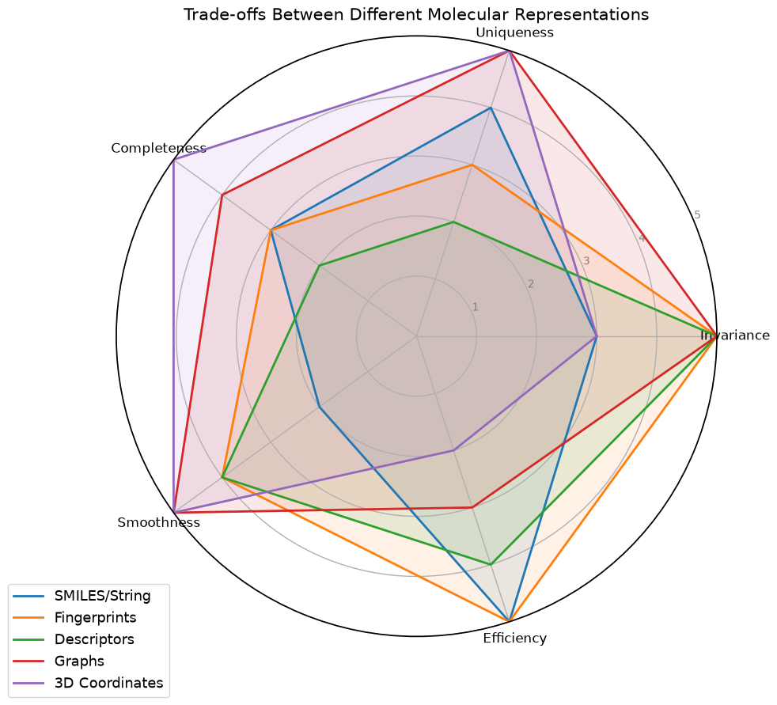
Explanation of representation trade-offs:
- SMILES strings are efficient and relatively unique, but aren't invariant to atom ordering.
- Fingerprints provide good invariance and efficiency, with moderate uniqueness and completeness.
- Descriptors are invariant but may lose uniqueness as they compress molecular information.
- Graph representations maintain more structural information but are less computationally efficient.
- 3D coordinate representations capture complete structural information but are sensitive to conformation
and less efficient to process.
3.3 Types of Molecular Representations#
Molecular representations fall into several categories:
String-based: Linear text notations like SMILES and InChI
Fingerprint-based: Bit vectors encoding presence of substructures or features
Descriptor-based: Numerical values describing physical and chemical properties
Graph-based: Molecules as graphs with atoms as nodes and bonds as edges
3D-based: Three-dimensional coordinates and spatial information
Let’s visualize this categorization:
# @title Molecular Representation Hierarchy { display-mode: "form" }
from IPython.display import Image
from IPython.core.display import HTML
# Create a compact representation of the hierarchy using HTML
html = """
<div style="background-color:#f8f9fa; padding:20px; border-radius:10px;">
<h3 style="text-align:center;">Molecular Representation Hierarchy</h3>
<ul style="list-style-type:none; padding-left:20px;">
<li>
<span style="font-weight:bold;">🔤 String-based</span>
<ul>
<li>SMILES: <code>CC(=O)OC1=CC=CC=C1C(=O)O</code> (Aspirin)</li>
<li>InChI: <code>InChI=1S/C9H8O4/c1-6(10)13-8-5-3-2-4-7(8)9(11)12/h2-5H,1H3,(H,11,12)</code></li>
<li>SELFIES: Self-referencing embedded strings</li>
</ul>
</li>
<li>
<span style="font-weight:bold;">👾 Fingerprint-based</span>
<ul>
<li>Morgan/ECFP: Extended connectivity fingerprints</li>
<li>MACCS: 166 predefined structural keys</li>
<li>Atom Pairs: Atom types and topological distances</li>
<li>Topological Torsions: Paths of 4 connected atoms</li>
</ul>
</li>
<li>
<span style="font-weight:bold;">🔢 Descriptor-based</span>
<ul>
<li>Physical: Molecular weight, logP, TPSA</li>
<li>Constitutional: Atom counts, bond counts</li>
<li>Topological: Molecular connectivity indices</li>
<li>Electronic: Partial charges, polarizability</li>
</ul>
</li>
<li>
<span style="font-weight:bold;">📊 Graph-based</span>
<ul>
<li>Adjacency matrix representation</li>
<li>Edge list representation</li>
<li>Node feature vectors (atom types, properties)</li>
<li>Edge feature vectors (bond types, properties)</li>
</ul>
</li>
<li>
<span style="font-weight:bold;">🧬 3D-based</span>
<ul>
<li>Cartesian coordinates</li>
<li>Distance matrices</li>
<li>Coulomb matrices</li>
<li>Pharmacophore features (spatial arrangement of interacting groups)</li>
</ul>
</li>
</ul>
</div>
"""
display(HTML(html))
Molecular Representation Hierarchy
-
🔤 String-based
- SMILES:
CC(=O)OC1=CC=CC=C1C(=O)O(Aspirin) - InChI:
InChI=1S/C9H8O4/c1-6(10)13-8-5-3-2-4-7(8)9(11)12/h2-5H,1H3,(H,11,12) - SELFIES: Self-referencing embedded strings
- SMILES:
-
👾 Fingerprint-based
- Morgan/ECFP: Extended connectivity fingerprints
- MACCS: 166 predefined structural keys
- Atom Pairs: Atom types and topological distances
- Topological Torsions: Paths of 4 connected atoms
-
🔢 Descriptor-based
- Physical: Molecular weight, logP, TPSA
- Constitutional: Atom counts, bond counts
- Topological: Molecular connectivity indices
- Electronic: Partial charges, polarizability
-
📊 Graph-based
- Adjacency matrix representation
- Edge list representation
- Node feature vectors (atom types, properties)
- Edge feature vectors (bond types, properties)
-
🧬 3D-based
- Cartesian coordinates
- Distance matrices
- Coulomb matrices
- Pharmacophore features (spatial arrangement of interacting groups)
4. Data Preparation#
Before exploring different molecular representations, let’s prepare a dataset of diverse molecules that we can use throughout this notebook.
# @title Load and Explore Dataset { display-mode: "form" }
def load_molecular_dataset():
"""Load a dataset of molecules with diverse structures for representation exploration."""
# Define a set of diverse molecules
sample_data = {
'Name': [
'Aspirin', 'Caffeine', 'Ibuprofen', 'Penicillin G', 'Paracetamol',
'Metformin', 'Atorvastatin', 'Chloroquine', 'Morphine', 'Diazepam',
'Tamoxifen', 'Fluoxetine', 'Sildenafil', 'Metoprolol', 'Cimetidine',
'Propranolol', 'Loratadine', 'Celecoxib', 'Omeprazole', 'Warfarin'
],
'SMILES': [
'CC(=O)OC1=CC=CC=C1C(=O)O',
'CN1C=NC2=C1C(=O)N(C(=O)N2C)C',
'CC(C)CC1=CC=C(C=C1)C(C)C(=O)O',
'CC1(C(N2C(S1)C(C2=O)NC(=O)CC3=CC=CC=C3)C(=O)O)C',
'CC(=O)NC1=CC=C(C=C1)O',
'CN(C)C(=N)NC(=N)N',
'CC(C)C1=C(C=C(C=C1)C(C)C)C(=O)NC2CCCCC2CCC(CC(CC(=O)O)O)O',
'CCN(CC)CCCC(C)NC1=C2C=CC(=CC2=NC=C1)Cl',
'CN1CCC23C4C1CC5=C2C(=C(C=C5)O)OC3C(C=C4)O',
'CN1C(=O)CN=C(C2=C1C=CC(=C2)Cl)C3=CC=CC=C3',
'CC(C)(C)NCC(COC1=CC=C(C=C1)CCOC1=CC=CC=C1)O',
'CNCCC(OC1=CC=C(C=C1)C(F)(F)F)C1=CC=CC=C1',
'CCCC1=NN(C2=C1N=C(NC2=O)C3=C(C=CC(=C3)S(=O)(=O)N4CCN(CC4)C)OCC)C',
'CCN(CC)CCOC1=CC=C(C=C1)C(C)NCC1=CC=C(C=C1)OC',
'CC1=C(NC=N1)CN1C=C(NC1=N)C1=CC=C(C=C1)NC',
'CC(C)NCC(COC1=CC=CC2=CC=CC=C21)O',
'CCOC(=O)N1CCC(=C2C3=C(CCC4=C2N=CC=C4)C=C(C=C3)Cl)CC1',
'CC1=C(C(=O)NS1(=O)=O)C2=C(C=CC=C2)C3=CC=CC=C3',
'CC1=CN=C(C(=C1OC)C)CS(=O)C2=NC3=C(N2)C=C(C=C3)OC',
'CC(=O)CC(C1=CC=CC=C1)C1=C(O)C2=C(OC1=O)C=CC=C2'
]
}
# Create DataFrame
df = pd.DataFrame(sample_data)
# Add RDKit molecule objects
df['Molecule'] = df['SMILES'].apply(Chem.MolFromSmiles)
# Add a few basic properties
df['MolWt'] = df['Molecule'].apply(Descriptors.MolWt)
df['LogP'] = df['Molecule'].apply(Descriptors.MolLogP)
df['TPSA'] = df['Molecule'].apply(Descriptors.TPSA)
df['NumHDonors'] = df['Molecule'].apply(Descriptors.NumHDonors)
df['NumHAcceptors'] = df['Molecule'].apply(Descriptors.NumHAcceptors)
df['NumRotBonds'] = df['Molecule'].apply(Descriptors.NumRotatableBonds)
return df
# Load the dataset
molecules_df = load_molecular_dataset()
# Display summary information
print(f"Dataset contains {len(molecules_df)} molecules")
print("\nSample of molecules with properties:")
display(molecules_df[['Name', 'SMILES', 'MolWt', 'LogP', 'TPSA']].head())
Dataset contains 20 molecules
Sample of molecules with properties:
| Name | SMILES | MolWt | LogP | TPSA | |
|---|---|---|---|---|---|
| 0 | Aspirin | CC(=O)OC1=CC=CC=C1C(=O)O | 180.159 | 1.3101 | 63.60 |
| 1 | Caffeine | CN1C=NC2=C1C(=O)N(C(=O)N2C)C | 194.194 | -1.0293 | 61.82 |
| 2 | Ibuprofen | CC(C)CC1=CC=C(C=C1)C(C)C(=O)O | 206.285 | 3.0732 | 37.30 |
| 3 | Penicillin G | CC1(C(N2C(S1)C(C2=O)NC(=O)CC3=CC=CC=C3)C(=O)O)C | 334.397 | 0.8608 | 86.71 |
| 4 | Paracetamol | CC(=O)NC1=CC=C(C=C1)O | 151.165 | 1.3506 | 49.33 |
# Visualize a few molecules from the dataset
def visualize_molecules(dataframe, n_mols=6):
mols = dataframe['Molecule'].tolist()[:n_mols]
names = dataframe['Name'].tolist()[:n_mols]
img = Draw.MolsToGridImage(mols, molsPerRow=3,
subImgSize=(300, 200),
legends=names)
display(img)
visualize_molecules(molecules_df)
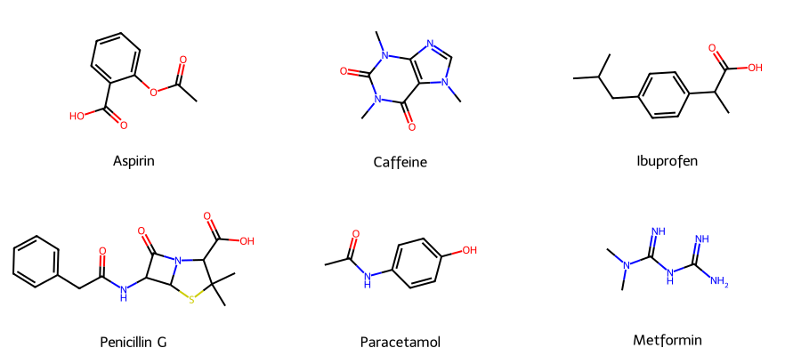
# Explore property distributions
fig, axs = plt.subplots(2, 3, figsize=(16, 8))
axs = axs.flatten()
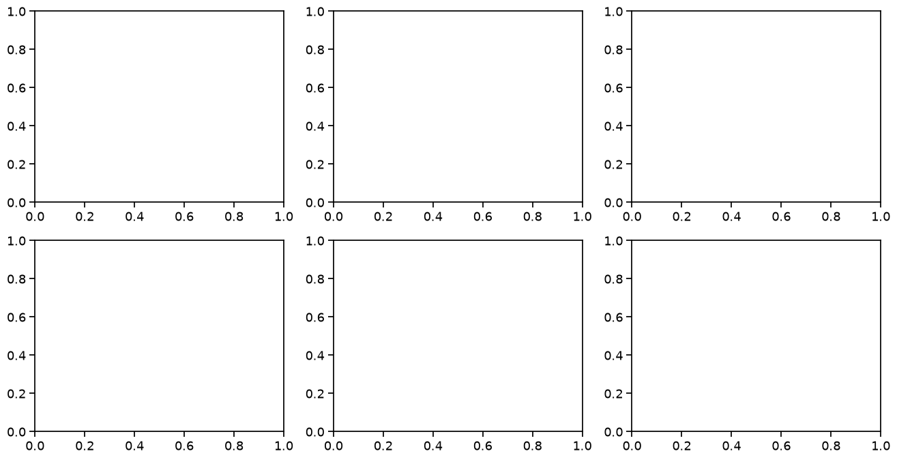
properties = ['MolWt', 'LogP', 'TPSA', 'NumHDonors', 'NumHAcceptors', 'NumRotBonds']
for i, prop in enumerate(properties):
sns.histplot(molecules_df[prop], kde=True, ax=axs[i])
axs[i].set_title(f'Distribution of {prop}')
axs[i].set_xlabel(prop)
plt.tight_layout()
plt.show()
<Figure size 640x480 with 0 Axes>
5. String-Based Representations#
String-based representations encode molecules as text strings, providing a compact and human-readable format.
# @title SMILES and Alternative String Representations { display-mode: "form" }
def generate_string_representations(smiles_list):
"""Generate different string representations for molecules."""
from rdkit.Chem import inchi
results = []
for smiles in smiles_list:
mol = Chem.MolFromSmiles(smiles)
if mol:
# Generate standard SMILES
canonical_smiles = Chem.MolToSmiles(mol, isomericSmiles=True)
# Generate non-isomeric SMILES (without stereochemistry)
nonisomeric_smiles = Chem.MolToSmiles(mol, isomericSmiles=False)
# Generate InChI and InChIKey
inchi_str = inchi.MolToInchi(mol)
inchikey = inchi.InchiToInchiKey(inchi_str)
results.append({
'Original SMILES': smiles,
'Canonical SMILES': canonical_smiles,
'Non-isomeric SMILES': nonisomeric_smiles,
'InChI': inchi_str,
'InChIKey': inchikey
})
return pd.DataFrame(results)
# Generate string representations for the first 5 molecules
string_df = generate_string_representations(molecules_df['SMILES'][:5])
[15:02:48] WARNING: Omitted undefined stereo
[15:02:48] WARNING: Omitted undefined stereo
# Display the results
print("Different string representations for the same molecules:")
pd.set_option('display.max_colwidth', 80) # For better display
display(string_df)
Different string representations for the same molecules:
| Original SMILES | Canonical SMILES | Non-isomeric SMILES | InChI | InChIKey | |
|---|---|---|---|---|---|
| 0 | CC(=O)OC1=CC=CC=C1C(=O)O | CC(=O)Oc1ccccc1C(=O)O | CC(=O)Oc1ccccc1C(=O)O | InChI=1S/C9H8O4/c1-6(10)13-8-5-3-2-4-7(8)9(11)12/h2-5H,1H3,(H,11,12) | BSYNRYMUTXBXSQ-UHFFFAOYSA-N |
| 1 | CN1C=NC2=C1C(=O)N(C(=O)N2C)C | Cn1c(=O)c2c(ncn2C)n(C)c1=O | Cn1c(=O)c2c(ncn2C)n(C)c1=O | InChI=1S/C8H10N4O2/c1-10-4-9-6-5(10)7(13)12(3)8(14)11(6)2/h4H,1-3H3 | RYYVLZVUVIJVGH-UHFFFAOYSA-N |
| 2 | CC(C)CC1=CC=C(C=C1)C(C)C(=O)O | CC(C)Cc1ccc(C(C)C(=O)O)cc1 | CC(C)Cc1ccc(C(C)C(=O)O)cc1 | InChI=1S/C13H18O2/c1-9(2)8-11-4-6-12(7-5-11)10(3)13(14)15/h4-7,9-10H,8H2,1-3... | HEFNNWSXXWATRW-UHFFFAOYSA-N |
| 3 | CC1(C(N2C(S1)C(C2=O)NC(=O)CC3=CC=CC=C3)C(=O)O)C | CC1(C)SC2C(NC(=O)Cc3ccccc3)C(=O)N2C1C(=O)O | CC1(C)SC2C(NC(=O)Cc3ccccc3)C(=O)N2C1C(=O)O | InChI=1S/C16H18N2O4S/c1-16(2)12(15(21)22)18-13(20)11(14(18)23-16)17-10(19)8-... | JGSARLDLIJGVTE-UHFFFAOYSA-N |
| 4 | CC(=O)NC1=CC=C(C=C1)O | CC(=O)Nc1ccc(O)cc1 | CC(=O)Nc1ccc(O)cc1 | InChI=1S/C8H9NO2/c1-6(10)9-7-2-4-8(11)5-3-7/h2-5,11H,1H3,(H,9,10) | RZVAJINKPMORJF-UHFFFAOYSA-N |
5.1 Properties of SMILES Representation#
# Demonstrate uniqueness issue with SMILES
def demonstrate_smiles_properties():
# Create a molecule with multiple valid SMILES
mol = Chem.MolFromSmiles('c1ccccc1') # Benzene
# Generate some different SMILES for the same molecule
smiles1 = Chem.MolToSmiles(mol)
# Create the same molecule a different way
mol2 = Chem.MolFromSmiles('C1=CC=CC=C1') # Also benzene
smiles2 = Chem.MolToSmiles(mol2)
# Create benzene with explicit hydrogens
mol3 = Chem.AddHs(mol)
smiles3 = Chem.MolToSmiles(mol3)
# Demonstrate invariance issue
atoms = list(range(mol.GetNumAtoms()))
np.random.shuffle(atoms)
mol4 = Chem.RenumberAtoms(mol, atoms)
smiles4 = Chem.MolToSmiles(mol4, canonical=False) # Non-canonical
smiles4_canonical = Chem.MolToSmiles(mol4) # Canonical (should match smiles1)
# Display results
results = pd.DataFrame({
'Representation': ['Standard SMILES', 'Alternative SMILES', 'SMILES with hydrogens',
'Non-canonical SMILES', 'Canonical SMILES'],
'String': [smiles1, smiles2, smiles3, smiles4, smiles4_canonical],
'Notes': [
'Default representation',
'Using Kekulé structure',
'With explicit hydrogens',
'After atom reordering (non-canonical)',
'After atom reordering (canonical)'
]
})
display(results)
print("\nObservations:")
print("1. The same molecule can have multiple SMILES representations")
print("2. Canonical SMILES addresses the invariance issue by providing a unique representation")
print("3. SMILES can represent the same molecule with different levels of detail")
demonstrate_smiles_properties()
| Representation | String | Notes | |
|---|---|---|---|
| 0 | Standard SMILES | c1ccccc1 | Default representation |
| 1 | Alternative SMILES | c1ccccc1 | Using Kekulé structure |
| 2 | SMILES with hydrogens | [H]c1c([H])c([H])c([H])c([H])c1[H] | With explicit hydrogens |
| 3 | Non-canonical SMILES | c1ccccc1 | After atom reordering (non-canonical) |
| 4 | Canonical SMILES | c1ccccc1 | After atom reordering (canonical) |
Observations:
1. The same molecule can have multiple SMILES representations
2. Canonical SMILES addresses the invariance issue by providing a unique representation
3. SMILES can represent the same molecule with different levels of detail
6. Fingerprint-Based Representations#
Molecular fingerprints are bit vectors or count vectors that encode the presence or frequency of specific structural features in a molecule.
# @title Generate Different Types of Fingerprints { display-mode: "form" }
def generate_fingerprints(mol, fp_type='morgan', radius=2, nBits=2048):
"""Generate different types of molecular fingerprints."""
if mol is None:
return None
if fp_type == 'morgan':
# Morgan fingerprints (ECFP-like)
fp = AllChem.GetMorganFingerprintAsBitVect(mol, radius, nBits=nBits)
elif fp_type == 'maccs':
# MACCS keys (166 bits)
fp = MACCSkeys.GenMACCSKeys(mol)
elif fp_type == 'rdkit':
# RDKit topological fingerprint
fp = Chem.RDKFingerprint(mol, fpSize=nBits)
elif fp_type == 'atom_pair':
# Atom pair fingerprints
fp = rdMolDescriptors.GetHashedAtomPairFingerprintAsBitVect(mol, nBits=nBits)
elif fp_type == 'torsion':
# Topological torsion fingerprints
fp = rdMolDescriptors.GetHashedTopologicalTorsionFingerprintAsBitVect(mol, nBits=nBits)
else:
raise ValueError(f"Fingerprint type '{fp_type}' not supported")
# Convert to NumPy array
array = np.zeros((1,))
DataStructs.ConvertToNumpyArray(fp, array)
return array
# Generate fingerprints for each molecule in the dataset
def calculate_all_fingerprints(dataframe):
"""Calculate different types of fingerprints for all molecules in the dataset."""
# Dictionary to store results
fingerprints = {
'morgan': [],
'maccs': [],
'rdkit': [],
'atom_pair': [],
'torsion': []
}
# Calculate fingerprints for each molecule
for mol in tqdm(dataframe['Molecule'], desc="Calculating fingerprints"):
fingerprints['morgan'].append(generate_fingerprints(mol, 'morgan'))
fingerprints['maccs'].append(generate_fingerprints(mol, 'maccs'))
fingerprints['rdkit'].append(generate_fingerprints(mol, 'rdkit'))
fingerprints['atom_pair'].append(generate_fingerprints(mol, 'atom_pair'))
fingerprints['torsion'].append(generate_fingerprints(mol, 'torsion'))
return fingerprints
# Calculate fingerprints
fingerprints = calculate_all_fingerprints(molecules_df)
[15:02:48] DEPRECATION WARNING: please use MorganGenerator
[15:02:48] DEPRECATION WARNING: please use AtomPairGenerator
[15:02:48] DEPRECATION WARNING: please use TopologicalTorsionGenerator
[15:02:48] DEPRECATION WARNING: please use MorganGenerator
[15:02:48] DEPRECATION WARNING: please use AtomPairGenerator
[15:02:48] DEPRECATION WARNING: please use TopologicalTorsionGenerator
[15:02:48] DEPRECATION WARNING: please use MorganGenerator
[15:02:48] DEPRECATION WARNING: please use AtomPairGenerator
[15:02:48] DEPRECATION WARNING: please use TopologicalTorsionGenerator
[15:02:48] DEPRECATION WARNING: please use MorganGenerator
[15:02:48] DEPRECATION WARNING: please use AtomPairGenerator
[15:02:48] DEPRECATION WARNING: please use TopologicalTorsionGenerator
[15:02:48] DEPRECATION WARNING: please use MorganGenerator
[15:02:48] DEPRECATION WARNING: please use AtomPairGenerator
[15:02:48] DEPRECATION WARNING: please use TopologicalTorsionGenerator
[15:02:48] DEPRECATION WARNING: please use MorganGenerator
[15:02:48] DEPRECATION WARNING: please use AtomPairGenerator
[15:02:48] DEPRECATION WARNING: please use TopologicalTorsionGenerator
[15:02:48] DEPRECATION WARNING: please use MorganGenerator
[15:02:48] DEPRECATION WARNING: please use AtomPairGenerator
[15:02:48] DEPRECATION WARNING: please use TopologicalTorsionGenerator
[15:02:48] DEPRECATION WARNING: please use MorganGenerator
[15:02:48] DEPRECATION WARNING: please use AtomPairGenerator
[15:02:48] DEPRECATION WARNING: please use TopologicalTorsionGenerator
[15:02:48] DEPRECATION WARNING: please use MorganGenerator
[15:02:48] DEPRECATION WARNING: please use AtomPairGenerator
[15:02:48] DEPRECATION WARNING: please use TopologicalTorsionGenerator
[15:02:48] DEPRECATION WARNING: please use MorganGenerator
[15:02:48] DEPRECATION WARNING: please use AtomPairGenerator
[15:02:48] DEPRECATION WARNING: please use TopologicalTorsionGenerator
[15:02:48] DEPRECATION WARNING: please use MorganGenerator
[15:02:48] DEPRECATION WARNING: please use AtomPairGenerator
[15:02:48] DEPRECATION WARNING: please use TopologicalTorsionGenerator
[15:02:48] DEPRECATION WARNING: please use MorganGenerator
[15:02:48] DEPRECATION WARNING: please use AtomPairGenerator
[15:02:48] DEPRECATION WARNING: please use TopologicalTorsionGenerator
[15:02:48] DEPRECATION WARNING: please use MorganGenerator
[15:02:48] DEPRECATION WARNING: please use AtomPairGenerator
[15:02:48] DEPRECATION WARNING: please use TopologicalTorsionGenerator
[15:02:48] DEPRECATION WARNING: please use MorganGenerator
[15:02:48] DEPRECATION WARNING: please use AtomPairGenerator
[15:02:48] DEPRECATION WARNING: please use TopologicalTorsionGenerator
[15:02:48] DEPRECATION WARNING: please use MorganGenerator
[15:02:49] DEPRECATION WARNING: please use AtomPairGenerator
[15:02:49] DEPRECATION WARNING: please use TopologicalTorsionGenerator
[15:02:49] DEPRECATION WARNING: please use MorganGenerator
[15:02:49] DEPRECATION WARNING: please use AtomPairGenerator
[15:02:49] DEPRECATION WARNING: please use TopologicalTorsionGenerator
[15:02:49] DEPRECATION WARNING: please use MorganGenerator
[15:02:49] DEPRECATION WARNING: please use AtomPairGenerator
[15:02:49] DEPRECATION WARNING: please use TopologicalTorsionGenerator
[15:02:49] DEPRECATION WARNING: please use MorganGenerator
[15:02:49] DEPRECATION WARNING: please use AtomPairGenerator
[15:02:49] DEPRECATION WARNING: please use TopologicalTorsionGenerator
[15:02:49] DEPRECATION WARNING: please use MorganGenerator
[15:02:49] DEPRECATION WARNING: please use AtomPairGenerator
[15:02:49] DEPRECATION WARNING: please use TopologicalTorsionGenerator
[15:02:49] DEPRECATION WARNING: please use MorganGenerator
[15:02:49] DEPRECATION WARNING: please use AtomPairGenerator
[15:02:49] DEPRECATION WARNING: please use TopologicalTorsionGenerator
6.1 Visualizing Fingerprints#
# @title Fingerprint Visualization { display-mode: "form" }
def visualize_fingerprint(fp, title="Molecular Fingerprint", n_bits=None):
"""Visualize a molecular fingerprint as a binary pattern."""
if n_bits is None:
n_bits = len(fp)
# Limit to first n_bits for visualization
fp_subset = fp[:n_bits]
# Reshape to a more visual format
if n_bits > 100:
# Calculate dimensions for a roughly square layout
width = int(np.ceil(np.sqrt(n_bits)))
height = int(np.ceil(n_bits / width))
# Pad the fingerprint to fit the grid
padded_fp = np.zeros(width * height)
padded_fp[:n_bits] = fp_subset
# Reshape to grid
fp_grid = padded_fp.reshape(height, width)
else:
# For small fingerprints, just display as is
fp_grid = fp_subset.reshape(1, -1)
plt.figure(figsize=(10, 6))
plt.imshow(fp_grid, cmap='binary', interpolation='nearest')
plt.title(title)
plt.colorbar(label='Bit value')
plt.tight_layout()
plt.show()
# Print fingerprint statistics
total_bits = len(fp)
active_bits = np.sum(fp > 0)
print(f"Fingerprint statistics:")
print(f"Total bits: {total_bits}")
print(f"Active bits: {active_bits} ({active_bits/total_bits:.2%})")
# Let's visualize fingerprints for a sample molecule (Aspirin)
aspirin_idx = molecules_df[molecules_df['Name'] == 'Aspirin'].index[0]
# Visualize different fingerprints for Aspirin
print("Morgan (ECFP) Fingerprint for Aspirin:")
visualize_fingerprint(fingerprints['morgan'][aspirin_idx],
"Morgan Fingerprint (ECFP4) for Aspirin", n_bits=256)
Morgan (ECFP) Fingerprint for Aspirin:
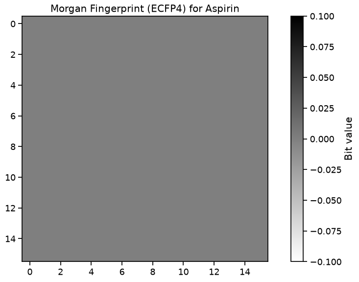
Fingerprint statistics:
Total bits: 2048
Active bits: 24 (1.17%)
print("\nMACCS Keys for Aspirin:")
visualize_fingerprint(fingerprints['maccs'][aspirin_idx],
"MACCS Keys for Aspirin")
MACCS Keys for Aspirin:
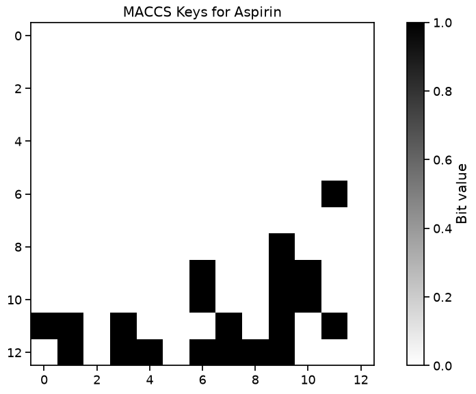
Fingerprint statistics:
Total bits: 167
Active bits: 21 (12.57%)
print("\nRDKit Topological Fingerprint for Aspirin:")
visualize_fingerprint(fingerprints['rdkit'][aspirin_idx],
"RDKit Topological Fingerprint for Aspirin", n_bits=256)
RDKit Topological Fingerprint for Aspirin:
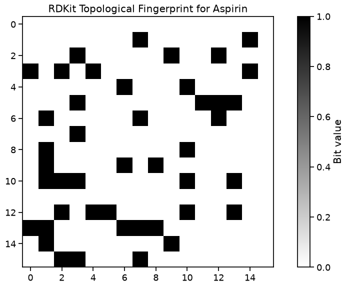
Fingerprint statistics:
Total bits: 2048
Active bits: 354 (17.29%)
6.2 Fingerprint Similarity#
def calculate_similarity_matrix(fingerprints, method='tanimoto'):
"""
Calculate similarity matrix between molecules based on fingerprints.
Parameters:
-----------
fingerprints : list
List of fingerprints for all molecules
method : str
Similarity metric ('tanimoto', 'dice', 'cosine')
Returns:
--------
numpy.ndarray
Similarity matrix
"""
n_mols = len(fingerprints)
similarity_matrix = np.zeros((n_mols, n_mols))
for i in range(n_mols):
for j in range(i, n_mols):
# Different similarity metrics
if method == 'tanimoto':
sim = DataStructs.TanimotoSimilarity(
DataStructs.cDataStructs.CreateFromBitString(''.join(str(int(b)) for b in fingerprints[i])),
DataStructs.cDataStructs.CreateFromBitString(''.join(str(int(b)) for b in fingerprints[j]))
)
elif method == 'dice':
sim = DataStructs.DiceSimilarity(
DataStructs.cDataStructs.CreateFromBitString(''.join(str(int(b)) for b in fingerprints[i])),
DataStructs.cDataStructs.CreateFromBitString(''.join(str(int(b)) for b in fingerprints[j]))
)
elif method == 'cosine':
sim = cosine_similarity([fingerprints[i]], [fingerprints[j]])[0, 0]
# Fill both sides of the symmetric matrix
similarity_matrix[i, j] = sim
similarity_matrix[j, i] = sim
return similarity_matrix
# Calculate Tanimoto similarity for Morgan fingerprints
morgan_similarity = calculate_similarity_matrix(fingerprints['morgan'], method='tanimoto')
# Visualize the similarity matrix
plt.figure(figsize=(10, 8))
sns.heatmap(morgan_similarity, cmap='viridis', xticklabels=molecules_df['Name'],
yticklabels=molecules_df['Name'], annot=False)
plt.title('Molecular Similarity (Morgan Fingerprints with Tanimoto)')
plt.xticks(rotation=90)
plt.yticks(rotation=0)
plt.tight_layout()
plt.show()
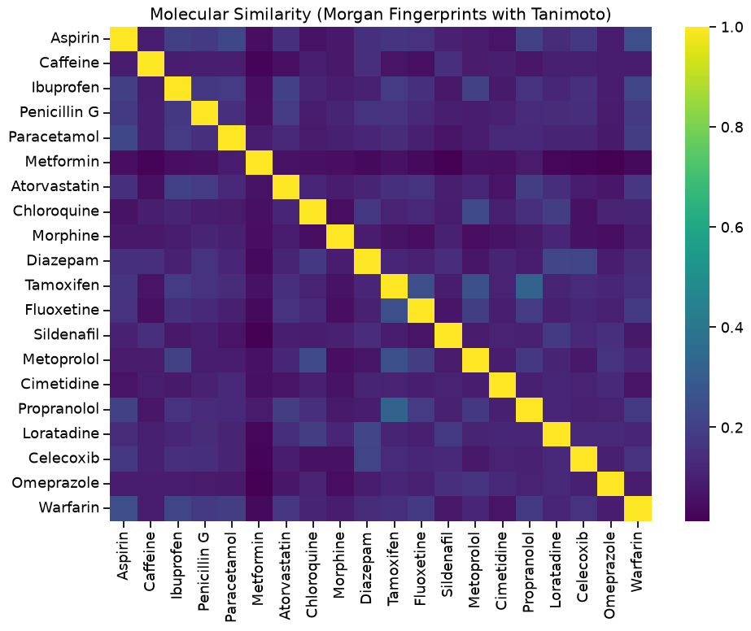
7. Descriptor-Based Representations#
Molecular descriptors are numerical values that characterize various physical, chemical, and structural properties of molecules.
# @title Calculate Molecular Descriptors { display-mode: "form" }
def calculate_descriptors(mol):
"""Calculate a comprehensive set of RDKit descriptors for a molecule."""
if mol is None:
return None
# List of descriptor functions to calculate
descriptor_functions = [
# Physical properties
(Descriptors.MolWt, "Molecular Weight"),
(Descriptors.ExactMolWt, "Exact Molecular Weight"),
(Descriptors.HeavyAtomMolWt, "Heavy Atom Molecular Weight"),
(Descriptors.MolLogP, "LogP"),
(Descriptors.MolMR, "Molar Refractivity"),
(Descriptors.TPSA, "Topological Polar Surface Area"),
# Atom counts and fractions
(Descriptors.HeavyAtomCount, "Heavy Atom Count"),
(Descriptors.NumValenceElectrons, "Valence Electron Count"),
(Descriptors.NumHDonors, "H-Bond Donors"),
(Descriptors.NumHAcceptors, "H-Bond Acceptors"),
(Descriptors.NHOHCount, "NHOH Count"),
(Descriptors.NOCount, "NO Count"),
(Descriptors.NumRotatableBonds, "Rotatable Bonds"),
(Descriptors.NumHeteroatoms, "Heteroatom Count"),
(Descriptors.FractionCSP3, "Fraction of SP3 Carbon"),
# Topological descriptors
(Descriptors.BalabanJ, "Balaban's J Index"),
(Descriptors.BertzCT, "Bertz CT"),
(Descriptors.Chi0v, "Atomic Connectivity Index (order 0)"),
(Descriptors.Chi1v, "Atomic Connectivity Index (order 1)"),
(Descriptors.Chi2v, "Atomic Connectivity Index (order 2)"),
(Descriptors.Chi3v, "Atomic Connectivity Index (order 3)"),
(Descriptors.Chi4v, "Atomic Connectivity Index (order 4)"),
(Descriptors.HallKierAlpha, "Hall-Kier Alpha"),
# Ring descriptors
(Descriptors.NumAromaticRings, "Aromatic Ring Count"),
(Descriptors.NumSaturatedRings, "Saturated Ring Count"),
(Descriptors.NumAliphaticRings, "Aliphatic Ring Count"),
(Descriptors.NumAromaticHeterocycles, "Aromatic Heterocycle Count"),
(Descriptors.NumSaturatedHeterocycles, "Saturated Heterocycle Count"),
(Descriptors.NumAliphaticHeterocycles, "Aliphatic Heterocycle Count"),
(Descriptors.NumAromaticCarbocycles, "Aromatic Carbocycle Count"),
(Descriptors.NumSaturatedCarbocycles, "Saturated Carbocycle Count"),
(Descriptors.NumAliphaticCarbocycles, "Aliphatic Carbocycle Count"),
# Other descriptors
(Descriptors.LabuteASA, "Labute ASA"),
(Descriptors.Kappa1, "Kappa 1"),
(Descriptors.Kappa2, "Kappa 2"),
(Descriptors.Kappa3, "Kappa 3")
]
# Calculate descriptors
descriptors = {}
for func, name in descriptor_functions:
try:
value = func(mol)
descriptors[name] = value
except:
descriptors[name] = None
return descriptors
# Calculate descriptors for all molecules
def calculate_all_descriptors(dataframe):
"""Calculate descriptors for all molecules in the dataset."""
all_descriptors = []
for mol in tqdm(dataframe['Molecule'], desc="Calculating descriptors"):
desc = calculate_descriptors(mol)
all_descriptors.append(desc)
# Convert to DataFrame
desc_df = pd.DataFrame(all_descriptors)
return desc_df
# Calculate descriptors
descriptors_df = calculate_all_descriptors(molecules_df)
# Add molecule names for reference
descriptors_df['Name'] = molecules_df['Name']
# Display a sample of the descriptors
print(f"Total descriptors calculated: {descriptors_df.shape[1] - 1}") # minus Name column
display(descriptors_df.head(5))
Total descriptors calculated: 36
| Molecular Weight | Exact Molecular Weight | Heavy Atom Molecular Weight | LogP | Molar Refractivity | Topological Polar Surface Area | Heavy Atom Count | Valence Electron Count | H-Bond Donors | H-Bond Acceptors | ... | Saturated Heterocycle Count | Aliphatic Heterocycle Count | Aromatic Carbocycle Count | Saturated Carbocycle Count | Aliphatic Carbocycle Count | Labute ASA | Kappa 1 | Kappa 2 | Kappa 3 | Name | |
|---|---|---|---|---|---|---|---|---|---|---|---|---|---|---|---|---|---|---|---|---|---|
| 0 | 180.159 | 180.042259 | 172.095 | 1.3101 | 44.7103 | 63.60 | 13 | 68 | 1 | 3 | ... | 0 | 0 | 1 | 0 | 0 | 74.757053 | 9.249606 | 3.709251 | 2.297415 | Aspirin |
| 1 | 194.194 | 194.080376 | 184.114 | -1.0293 | 51.1960 | 61.82 | 14 | 74 | 0 | 3 | ... | 0 | 0 | 0 | 0 | 0 | 79.028957 | 8.735233 | 2.567948 | 0.875774 | Caffeine |
| 2 | 206.285 | 206.130680 | 188.141 | 3.0732 | 61.0348 | 37.30 | 15 | 82 | 1 | 1 | ... | 0 | 0 | 1 | 0 | 0 | 90.941754 | 11.763046 | 4.964460 | 3.387631 | Ibuprofen |
| 3 | 334.397 | 334.098728 | 316.253 | 0.8608 | 85.8045 | 86.71 | 23 | 122 | 2 | 4 | ... | 2 | 2 | 1 | 0 | 0 | 137.780768 | 15.859752 | 5.559882 | 2.692386 | Penicillin G |
| 4 | 151.165 | 151.063329 | 142.093 | 1.3506 | 42.4105 | 49.33 | 11 | 58 | 2 | 2 | ... | 0 | 0 | 1 | 0 | 0 | 64.666905 | 7.595374 | 3.053138 | 2.292304 | Paracetamol |
5 rows × 37 columns
7.1 Analyzing Molecular Descriptors#
# @title Descriptor Analysis and Correlation { display-mode: "form" }
def analyze_descriptors(desc_df):
"""Analyze descriptor values and relationships."""
# Remove non-numeric columns
numeric_df = desc_df.select_dtypes(include=[np.number])
# Calculate basic statistics
desc_stats = numeric_df.describe().T
desc_stats['Variance'] = numeric_df.var()
desc_stats['Missing'] = numeric_df.isnull().sum()
# Sort by variance (for feature importance)
desc_stats = desc_stats.sort_values('Variance', ascending=False)
# Display the most variable descriptors
print("Descriptors with highest variance:")
display(desc_stats.head(10))
# Calculate correlation matrix
corr_matrix = numeric_df.corr()
# Visualize correlation matrix
plt.figure(figsize=(12, 10))
sns.heatmap(corr_matrix, cmap='coolwarm', center=0, linewidths=0.5, annot=False)
plt.title('Correlation Matrix of Molecular Descriptors')
plt.tight_layout()
plt.show()
# Find highly correlated pairs
corr_pairs = []
for i in range(len(corr_matrix.columns)):
for j in range(i+1, len(corr_matrix.columns)):
corr = corr_matrix.iloc[i, j]
if abs(corr) > 0.9: # Threshold for high correlation
corr_pairs.append((corr_matrix.columns[i], corr_matrix.columns[j], corr))
# Display highly correlated pairs
if corr_pairs:
print("\nHighly correlated descriptor pairs (|r| > 0.9):")
for desc1, desc2, corr in sorted(corr_pairs, key=lambda x: abs(x[2]), reverse=True):
print(f"{desc1} ~ {desc2}: r = {corr:.3f}")
else:
print("\nNo highly correlated descriptor pairs found.")
return desc_stats
# Analyze descriptors
desc_stats = analyze_descriptors(descriptors_df)
Descriptors with highest variance:
| count | mean | std | min | 25% | 50% | 75% | max | Variance | Missing | |
|---|---|---|---|---|---|---|---|---|---|---|
| Bertz CT | 20.0 | 652.662731 | 270.559515 | 126.919685 | 554.941670 | 641.449668 | 805.664460 | 1322.639953 | 73202.450940 | 0 |
| Molecular Weight | 20.0 | 294.727300 | 90.482316 | 129.167000 | 246.083000 | 303.842000 | 343.956250 | 474.587000 | 8187.049508 | 0 |
| Exact Molecular Weight | 20.0 | 294.437378 | 90.376421 | 129.101445 | 245.900592 | 303.583237 | 343.689736 | 474.204924 | 8167.897559 | 0 |
| Heavy Atom Molecular Weight | 20.0 | 274.970500 | 83.559939 | 118.079000 | 225.671000 | 288.717000 | 318.253250 | 444.347000 | 6982.263482 | 0 |
| Labute ASA | 20.0 | 125.117728 | 38.175833 | 53.854366 | 108.055710 | 125.333953 | 144.269546 | 192.780734 | 1457.394208 | 0 |
| Valence Electron Count | 20.0 | 111.900000 | 34.601339 | 52.000000 | 95.500000 | 113.000000 | 128.500000 | 180.000000 | 1197.252632 | 0 |
| Topological Polar Surface Area | 20.0 | 60.227500 | 26.142530 | 21.260000 | 40.442500 | 57.375000 | 79.145000 | 113.420000 | 683.431883 | 0 |
| Molar Refractivity | 20.0 | 82.439230 | 25.525304 | 36.463500 | 73.441150 | 81.928400 | 97.979900 | 125.985500 | 651.541132 | 0 |
| Heavy Atom Count | 20.0 | 21.050000 | 6.320185 | 9.000000 | 18.000000 | 21.500000 | 24.250000 | 33.000000 | 39.944737 | 0 |
| Kappa 1 | 20.0 | 14.938723 | 4.990522 | 7.595374 | 11.990957 | 14.437550 | 17.293599 | 26.333259 | 24.905307 | 0 |
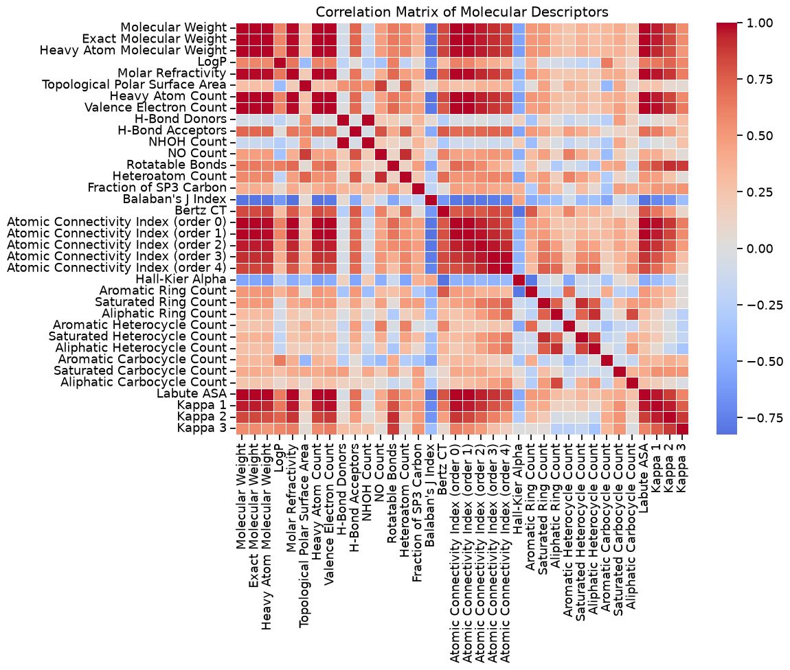
Highly correlated descriptor pairs (|r| > 0.9):
Molecular Weight ~ Exact Molecular Weight: r = 1.000
Molecular Weight ~ Heavy Atom Molecular Weight: r = 0.998
Exact Molecular Weight ~ Heavy Atom Molecular Weight: r = 0.998
Heavy Atom Count ~ Labute ASA: r = 0.997
Exact Molecular Weight ~ Heavy Atom Count: r = 0.996
Molecular Weight ~ Heavy Atom Count: r = 0.996
Molecular Weight ~ Labute ASA: r = 0.995
Exact Molecular Weight ~ Labute ASA: r = 0.995
Atomic Connectivity Index (order 0) ~ Labute ASA: r = 0.994
Molar Refractivity ~ Labute ASA: r = 0.994
Heavy Atom Count ~ Valence Electron Count: r = 0.994
Molar Refractivity ~ Atomic Connectivity Index (order 0): r = 0.993
Valence Electron Count ~ Atomic Connectivity Index (order 0): r = 0.993
Valence Electron Count ~ Labute ASA: r = 0.993
Heavy Atom Molecular Weight ~ Heavy Atom Count: r = 0.993
Atomic Connectivity Index (order 0) ~ Atomic Connectivity Index (order 1): r = 0.992
Atomic Connectivity Index (order 1) ~ Labute ASA: r = 0.991
Exact Molecular Weight ~ Valence Electron Count: r = 0.991
Molecular Weight ~ Atomic Connectivity Index (order 1): r = 0.991
Exact Molecular Weight ~ Atomic Connectivity Index (order 1): r = 0.991
Molecular Weight ~ Valence Electron Count: r = 0.991
Heavy Atom Molecular Weight ~ Labute ASA: r = 0.990
Molecular Weight ~ Atomic Connectivity Index (order 0): r = 0.989
Exact Molecular Weight ~ Atomic Connectivity Index (order 0): r = 0.989
H-Bond Donors ~ NHOH Count: r = 0.989
Heavy Atom Count ~ Atomic Connectivity Index (order 0): r = 0.989
Heavy Atom Count ~ Atomic Connectivity Index (order 1): r = 0.988
Valence Electron Count ~ Atomic Connectivity Index (order 1): r = 0.987
Molar Refractivity ~ Heavy Atom Count: r = 0.986
Molar Refractivity ~ Atomic Connectivity Index (order 1): r = 0.986
Heavy Atom Molecular Weight ~ Atomic Connectivity Index (order 1): r = 0.985
Molar Refractivity ~ Valence Electron Count: r = 0.984
Molecular Weight ~ Molar Refractivity: r = 0.982
Exact Molecular Weight ~ Molar Refractivity: r = 0.982
Atomic Connectivity Index (order 3) ~ Atomic Connectivity Index (order 4): r = 0.982
Heavy Atom Molecular Weight ~ Valence Electron Count: r = 0.982
Heavy Atom Molecular Weight ~ Atomic Connectivity Index (order 0): r = 0.980
Valence Electron Count ~ Kappa 1: r = 0.978
Heavy Atom Molecular Weight ~ Molar Refractivity: r = 0.974
Atomic Connectivity Index (order 0) ~ Kappa 1: r = 0.972
Atomic Connectivity Index (order 1) ~ Atomic Connectivity Index (order 2): r = 0.969
Molar Refractivity ~ Kappa 1: r = 0.962
Atomic Connectivity Index (order 2) ~ Atomic Connectivity Index (order 3): r = 0.962
Labute ASA ~ Kappa 1: r = 0.961
Exact Molecular Weight ~ Atomic Connectivity Index (order 2): r = 0.955
Molecular Weight ~ Atomic Connectivity Index (order 2): r = 0.955
Kappa 1 ~ Kappa 2: r = 0.955
Heavy Atom Count ~ Kappa 1: r = 0.954
Exact Molecular Weight ~ Kappa 1: r = 0.953
Molecular Weight ~ Kappa 1: r = 0.952
Heavy Atom Molecular Weight ~ Atomic Connectivity Index (order 2): r = 0.952
Atomic Connectivity Index (order 1) ~ Kappa 1: r = 0.950
Atomic Connectivity Index (order 2) ~ Labute ASA: r = 0.948
Heavy Atom Count ~ Atomic Connectivity Index (order 2): r = 0.948
Atomic Connectivity Index (order 0) ~ Atomic Connectivity Index (order 2): r = 0.948
Valence Electron Count ~ Atomic Connectivity Index (order 2): r = 0.947
Heavy Atom Molecular Weight ~ Kappa 1: r = 0.935
Atomic Connectivity Index (order 1) ~ Atomic Connectivity Index (order 3): r = 0.931
Molar Refractivity ~ Atomic Connectivity Index (order 2): r = 0.929
Atomic Connectivity Index (order 2) ~ Atomic Connectivity Index (order 4): r = 0.922
Saturated Ring Count ~ Saturated Heterocycle Count: r = 0.921
NO Count ~ Heteroatom Count: r = 0.920
Heavy Atom Molecular Weight ~ Atomic Connectivity Index (order 3): r = 0.920
Exact Molecular Weight ~ Atomic Connectivity Index (order 3): r = 0.915
Molecular Weight ~ Atomic Connectivity Index (order 3): r = 0.915
Rotatable Bonds ~ Kappa 2: r = 0.909
Heavy Atom Count ~ Atomic Connectivity Index (order 3): r = 0.905
Aliphatic Ring Count ~ Aliphatic Heterocycle Count: r = 0.902
7.2 Dimensionality Reduction for Descriptors#
# @title PCA on Molecular Descriptors { display-mode: "form" }
def perform_pca_on_descriptors(desc_df, n_components=2):
"""Perform PCA on molecular descriptors and visualize results."""
# Prepare data for PCA
# Remove non-numeric columns and handle missing values
numeric_df = desc_df.select_dtypes(include=[np.number])
numeric_df = numeric_df.fillna(numeric_df.mean())
# Standardize the data
from sklearn.preprocessing import StandardScaler
scaler = StandardScaler()
scaled_data = scaler.fit_transform(numeric_df)
# Perform PCA
pca = PCA(n_components=n_components)
pca_result = pca.fit_transform(scaled_data)
# Create DataFrame with PCA results
pca_df = pd.DataFrame(
data=pca_result,
columns=[f'PC{i+1}' for i in range(n_components)]
)
pca_df['Name'] = desc_df['Name']
# Visualize PCA results
plt.figure(figsize=(10, 8))
plt.scatter(pca_df['PC1'], pca_df['PC2'], alpha=0.8, s=100)
# Add labels for each point
for i, txt in enumerate(pca_df['Name']):
plt.annotate(txt, (pca_df['PC1'].iloc[i], pca_df['PC2'].iloc[i]), fontsize=9,
xytext=(5, 5), textcoords='offset points')
# Add explained variance information
explained_var = pca.explained_variance_ratio_
plt.xlabel(f'PC1 ({explained_var[0]:.2%} explained variance)')
plt.ylabel(f'PC2 ({explained_var[1]:.2%} explained variance)')
plt.title('PCA of Molecular Descriptors')
plt.grid(alpha=0.3)
plt.tight_layout()
plt.show()
# Get feature importance
components = pd.DataFrame(
data=pca.components_.T,
columns=[f'PC{i+1}' for i in range(n_components)],
index=numeric_df.columns
)
# Display the most important features for each component
print("Top descriptors contributing to principal components:")
for i in range(n_components):
pc = f'PC{i+1}'
top_features = components[pc].abs().sort_values(ascending=False).head(5)
print(f"\n{pc} (explains {explained_var[i]:.2%} of variance):")
for j, (feature, importance) in enumerate(top_features.items(), 1):
print(f" {j}. {feature}: {importance:.3f}")
return pca_df, components
# Perform PCA
pca_df, pca_components = perform_pca_on_descriptors(descriptors_df)
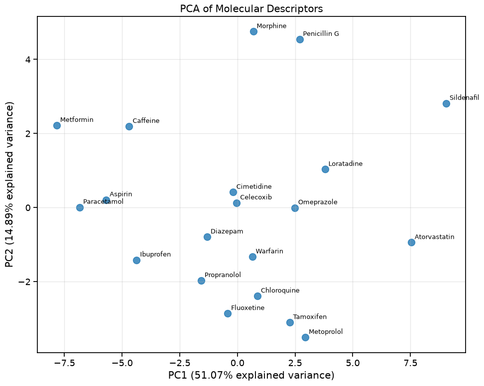
Top descriptors contributing to principal components:
PC1 (explains 51.07% of variance):
1. Exact Molecular Weight: 0.232
2. Molecular Weight: 0.232
3. Heavy Atom Count: 0.231
4. Heavy Atom Molecular Weight: 0.231
5. Atomic Connectivity Index (order 1): 0.231
PC2 (explains 14.89% of variance):
1. Saturated Heterocycle Count: 0.308
2. Aliphatic Heterocycle Count: 0.306
3. LogP: 0.299
4. Aliphatic Ring Count: 0.287
5. Saturated Ring Count: 0.281
8. Graph-Based Representations#
Graph-based representations treat molecules as graphs, with atoms as nodes and bonds as edges. This preserves the full topological structure of the molecule.
# @title Molecule to Graph Conversion { display-mode: "form" }
def mol_to_graph(mol):
"""Convert an RDKit molecule to a graph representation (adjacency matrix and feature matrices)."""
if mol is None:
return None
# Get number of atoms
n_atoms = mol.GetNumAtoms()
# Initialize adjacency matrix
adjacency_matrix = np.zeros((n_atoms, n_atoms))
# Fill adjacency matrix with bond information
for bond in mol.GetBonds():
start_atom = bond.GetBeginAtomIdx()
end_atom = bond.GetEndAtomIdx()
bond_type = bond.GetBondTypeAsDouble()
# Set bond in both directions (undirected graph)
adjacency_matrix[start_atom, end_atom] = bond_type
adjacency_matrix[end_atom, start_atom] = bond_type
# Create node feature matrix
node_features = []
for atom in mol.GetAtoms():
# Basic atomic features
features = [
atom.GetAtomicNum(), # Atomic number
atom.GetTotalDegree(), # Total degree (number of bonds)
atom.GetFormalCharge(), # Formal charge
atom.GetTotalNumHs(), # Total number of Hydrogens
int(atom.GetIsAromatic()), # Aromaticity flag
atom.GetMass(), # Atomic mass
atom.GetImplicitValence() # Implicit valence
]
node_features.append(features)
return {
'adjacency_matrix': adjacency_matrix,
'node_features': np.array(node_features)
}
# Convert a sample molecule to graph representation
def visualize_molecule_graph(mol_name):
"""Visualize a molecule as a graph."""
# Get the molecule
mol_idx = molecules_df[molecules_df['Name'] == mol_name].index[0]
mol = molecules_df.loc[mol_idx, 'Molecule']
# Convert to graph
graph = mol_to_graph(mol)
if graph is None:
print(f"Could not convert {mol_name} to graph representation.")
return
# Display the molecule
print(f"Molecule: {mol_name}")
display(Draw.MolToImage(mol, size=(300, 200)))
# Display adjacency matrix
plt.figure(figsize=(8, 6))
plt.imshow(graph['adjacency_matrix'], cmap='viridis')
plt.colorbar(label='Bond Type')
plt.title(f'Adjacency Matrix for {mol_name}')
plt.tight_layout()
plt.show()
# Display node features
node_df = pd.DataFrame(
graph['node_features'],
columns=['Atomic Number', 'Degree', 'Formal Charge', 'Num Hs', 'Is Aromatic', 'Mass', 'Implicit Valence']
)
print(f"\nNode features for {mol_name}:")
display(node_df)
# Create a network visualization of the molecule
import networkx as nx
G = nx.from_numpy_array(graph['adjacency_matrix'])
# Get atom symbols for labels
atom_labels = {}
for i, atom in enumerate(mol.GetAtoms()):
atom_labels[i] = atom.GetSymbol()
# Get node colors based on atom type
atom_colors = []
for atom in mol.GetAtoms():
# Simple color scheme
if atom.GetSymbol() == 'C':
atom_colors.append('grey')
elif atom.GetSymbol() == 'O':
atom_colors.append('red')
elif atom.GetSymbol() == 'N':
atom_colors.append('blue')
elif atom.GetSymbol() == 'S':
atom_colors.append('yellow')
elif atom.GetSymbol() == 'F' or atom.GetSymbol() == 'Cl' or atom.GetSymbol() == 'Br':
atom_colors.append('green')
else:
atom_colors.append('purple')
# Draw the graph
plt.figure(figsize=(8, 6))
pos = nx.spring_layout(G, seed=42) # For reproducible layout
# Draw nodes
nx.draw_networkx_nodes(G, pos, node_color=atom_colors, node_size=500)
# Get edge weights (bond types) for drawing
edge_weights = nx.get_edge_attributes(G, 'weight').items()
# Draw edges with different styles based on bond type
single_edges = [(u, v) for (u, v, d) in G.edges(data=True) if d['weight'] == 1.0]
double_edges = [(u, v) for (u, v, d) in G.edges(data=True) if d['weight'] == 2.0]
triple_edges = [(u, v) for (u, v, d) in G.edges(data=True) if d['weight'] == 3.0]
aromatic_edges = [(u, v) for (u, v, d) in G.edges(data=True) if d['weight'] == 1.5]
nx.draw_networkx_edges(G, pos, edgelist=single_edges, width=1.5)
nx.draw_networkx_edges(G, pos, edgelist=double_edges, width=2.5)
nx.draw_networkx_edges(G, pos, edgelist=triple_edges, width=3.5)
nx.draw_networkx_edges(G, pos, edgelist=aromatic_edges, width=1.5, style='dashed')
# Draw labels
nx.draw_networkx_labels(G, pos, atom_labels)
plt.title(f'Graph Representation of {mol_name}')
plt.axis('off')
plt.tight_layout()
plt.show()
# Visualize graph representations of a few molecules
visualize_molecule_graph('Aspirin')
visualize_molecule_graph('Paracetamol')
Molecule: Aspirin
[15:02:51] DEPRECATION WARNING: please use GetValence(Chem.ValenceType.IMPLICIT) instead
[15:02:51] DEPRECATION WARNING: please use GetValence(Chem.ValenceType.IMPLICIT) instead
[15:02:51] DEPRECATION WARNING: please use GetValence(Chem.ValenceType.IMPLICIT) instead
[15:02:51] DEPRECATION WARNING: please use GetValence(Chem.ValenceType.IMPLICIT) instead
[15:02:51] DEPRECATION WARNING: please use GetValence(Chem.ValenceType.IMPLICIT) instead
[15:02:51] DEPRECATION WARNING: please use GetValence(Chem.ValenceType.IMPLICIT) instead
[15:02:51] DEPRECATION WARNING: please use GetValence(Chem.ValenceType.IMPLICIT) instead
[15:02:51] DEPRECATION WARNING: please use GetValence(Chem.ValenceType.IMPLICIT) instead
[15:02:51] DEPRECATION WARNING: please use GetValence(Chem.ValenceType.IMPLICIT) instead
[15:02:51] DEPRECATION WARNING: please use GetValence(Chem.ValenceType.IMPLICIT) instead
[15:02:51] DEPRECATION WARNING: please use GetValence(Chem.ValenceType.IMPLICIT) instead
[15:02:51] DEPRECATION WARNING: please use GetValence(Chem.ValenceType.IMPLICIT) instead
[15:02:51] DEPRECATION WARNING: please use GetValence(Chem.ValenceType.IMPLICIT) instead
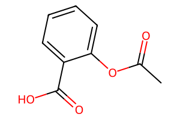
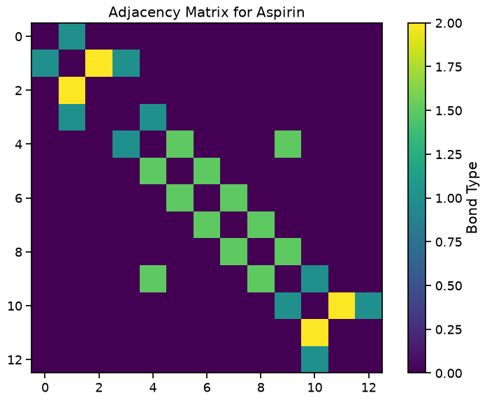
Node features for Aspirin:
| Atomic Number | Degree | Formal Charge | Num Hs | Is Aromatic | Mass | Implicit Valence | |
|---|---|---|---|---|---|---|---|
| 0 | 6.0 | 4.0 | 0.0 | 3.0 | 0.0 | 12.011 | 3.0 |
| 1 | 6.0 | 3.0 | 0.0 | 0.0 | 0.0 | 12.011 | 0.0 |
| 2 | 8.0 | 1.0 | 0.0 | 0.0 | 0.0 | 15.999 | 0.0 |
| 3 | 8.0 | 2.0 | 0.0 | 0.0 | 0.0 | 15.999 | 0.0 |
| 4 | 6.0 | 3.0 | 0.0 | 0.0 | 1.0 | 12.011 | 0.0 |
| 5 | 6.0 | 3.0 | 0.0 | 1.0 | 1.0 | 12.011 | 1.0 |
| 6 | 6.0 | 3.0 | 0.0 | 1.0 | 1.0 | 12.011 | 1.0 |
| 7 | 6.0 | 3.0 | 0.0 | 1.0 | 1.0 | 12.011 | 1.0 |
| 8 | 6.0 | 3.0 | 0.0 | 1.0 | 1.0 | 12.011 | 1.0 |
| 9 | 6.0 | 3.0 | 0.0 | 0.0 | 1.0 | 12.011 | 0.0 |
| 10 | 6.0 | 3.0 | 0.0 | 0.0 | 0.0 | 12.011 | 0.0 |
| 11 | 8.0 | 1.0 | 0.0 | 0.0 | 0.0 | 15.999 | 0.0 |
| 12 | 8.0 | 2.0 | 0.0 | 1.0 | 0.0 | 15.999 | 1.0 |
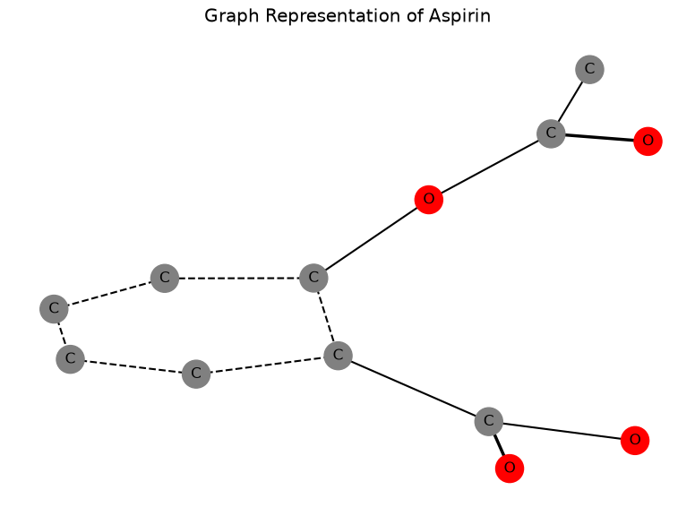
Molecule: Paracetamol
[15:02:51] DEPRECATION WARNING: please use GetValence(Chem.ValenceType.IMPLICIT) instead
[15:02:51] DEPRECATION WARNING: please use GetValence(Chem.ValenceType.IMPLICIT) instead
[15:02:51] DEPRECATION WARNING: please use GetValence(Chem.ValenceType.IMPLICIT) instead
[15:02:51] DEPRECATION WARNING: please use GetValence(Chem.ValenceType.IMPLICIT) instead
[15:02:51] DEPRECATION WARNING: please use GetValence(Chem.ValenceType.IMPLICIT) instead
[15:02:51] DEPRECATION WARNING: please use GetValence(Chem.ValenceType.IMPLICIT) instead
[15:02:51] DEPRECATION WARNING: please use GetValence(Chem.ValenceType.IMPLICIT) instead
[15:02:51] DEPRECATION WARNING: please use GetValence(Chem.ValenceType.IMPLICIT) instead
[15:02:51] DEPRECATION WARNING: please use GetValence(Chem.ValenceType.IMPLICIT) instead
[15:02:51] DEPRECATION WARNING: please use GetValence(Chem.ValenceType.IMPLICIT) instead
[15:02:51] DEPRECATION WARNING: please use GetValence(Chem.ValenceType.IMPLICIT) instead
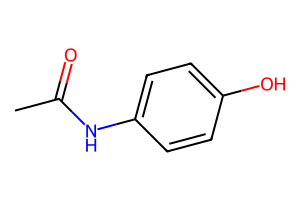
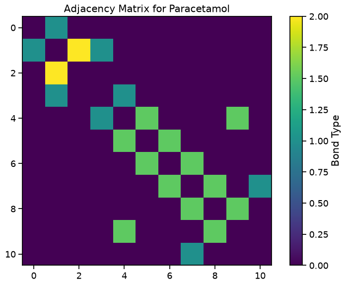
Node features for Paracetamol:
| Atomic Number | Degree | Formal Charge | Num Hs | Is Aromatic | Mass | Implicit Valence | |
|---|---|---|---|---|---|---|---|
| 0 | 6.0 | 4.0 | 0.0 | 3.0 | 0.0 | 12.011 | 3.0 |
| 1 | 6.0 | 3.0 | 0.0 | 0.0 | 0.0 | 12.011 | 0.0 |
| 2 | 8.0 | 1.0 | 0.0 | 0.0 | 0.0 | 15.999 | 0.0 |
| 3 | 7.0 | 3.0 | 0.0 | 1.0 | 0.0 | 14.007 | 1.0 |
| 4 | 6.0 | 3.0 | 0.0 | 0.0 | 1.0 | 12.011 | 0.0 |
| 5 | 6.0 | 3.0 | 0.0 | 1.0 | 1.0 | 12.011 | 1.0 |
| 6 | 6.0 | 3.0 | 0.0 | 1.0 | 1.0 | 12.011 | 1.0 |
| 7 | 6.0 | 3.0 | 0.0 | 0.0 | 1.0 | 12.011 | 0.0 |
| 8 | 6.0 | 3.0 | 0.0 | 1.0 | 1.0 | 12.011 | 1.0 |
| 9 | 6.0 | 3.0 | 0.0 | 1.0 | 1.0 | 12.011 | 1.0 |
| 10 | 8.0 | 2.0 | 0.0 | 1.0 | 0.0 | 15.999 | 1.0 |
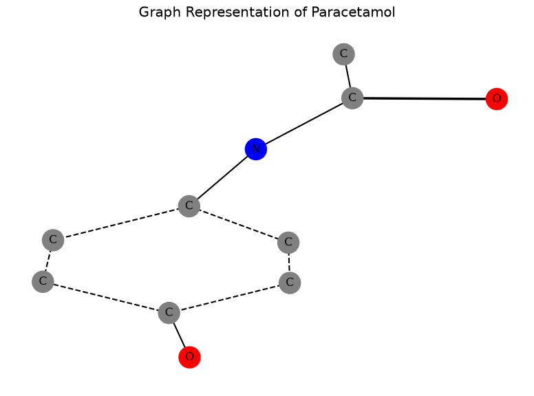
9. 3D Representations#
3D representations capture the three-dimensional structure of molecules, which is often crucial for understanding biological activity.
# @title Generate and Visualize 3D Structures { display-mode: "form" }
def generate_3d_conformer(mol, optimize=True):
"""Generate a 3D conformer for a molecule."""
if mol is None:
return None
# Create a copy of the molecule
mol_3d = Chem.Mol(mol)
# Add hydrogens
mol_3d = Chem.AddHs(mol_3d)
# Generate 3D coordinates
try:
AllChem.EmbedMolecule(mol_3d, randomSeed=42)
# Energy minimize with MMFF
if optimize:
AllChem.MMFFOptimizeMolecule(mol_3d)
return mol_3d
except:
print(f"Could not generate 3D conformer.")
return None
# Generate 3D conformers for visualization
def visualize_3d_molecule(mol_name):
"""Generate and visualize a 3D structure for a molecule."""
# Get the molecule
mol_idx = molecules_df[molecules_df['Name'] == mol_name].index[0]
mol = molecules_df.loc[mol_idx, 'Molecule']
# Generate 3D conformer
mol_3d = generate_3d_conformer(mol)
if mol_3d is None:
print(f"Could not generate 3D conformer for {mol_name}.")
return
# Get atomic coordinates
conf = mol_3d.GetConformer()
coords = np.array([conf.GetAtomPosition(i) for i in range(mol_3d.GetNumAtoms())])
# Get atom symbols
atom_symbols = [atom.GetSymbol() for atom in mol_3d.GetAtoms()]
# Create a map of atom symbols to colors
atom_colors = {
'C': 'grey',
'O': 'red',
'N': 'blue',
'S': 'yellow',
'F': 'green',
'Cl': 'green',
'Br': 'brown',
'I': 'purple',
'H': 'white'
}
# Get colors for each atom
colors = [atom_colors.get(symbol, 'pink') for symbol in atom_symbols]
# Display the 2D structure for reference
print(f"Molecule: {mol_name}")
display(Draw.MolToImage(mol, size=(300, 200)))
# Create 3D visualization
from mpl_toolkits.mplot3d import Axes3D
fig = plt.figure(figsize=(10, 8))
ax = fig.add_subplot(111, projection='3d')
# Plot atoms
ax.scatter(coords[:, 0], coords[:, 1], coords[:, 2], c=colors, s=100)
# Plot bonds
for bond in mol_3d.GetBonds():
idx1 = bond.GetBeginAtomIdx()
idx2 = bond.GetEndAtomIdx()
# Get coordinates
pos1 = coords[idx1]
pos2 = coords[idx2]
# Plot the bond
ax.plot([pos1[0], pos2[0]], [pos1[1], pos2[1]], [pos1[2], pos2[2]], 'k-', alpha=0.6)
# Customize the plot
ax.set_title(f'3D Structure of {mol_name}')
# Set axis labels and limits
ax.set_xlabel('X')
ax.set_ylabel('Y')
ax.set_zlabel('Z')
# Set equal aspect ratio
max_range = np.array([coords[:, 0].max() - coords[:, 0].min(),
coords[:, 1].max() - coords[:, 1].min(),
coords[:, 2].max() - coords[:, 2].min()]).max() / 2.0
mid_x = (coords[:, 0].max() + coords[:, 0].min()) / 2.0
mid_y = (coords[:, 1].max() + coords[:, 1].min()) / 2.0
mid_z = (coords[:, 2].max() + coords[:, 2].min()) / 2.0
ax.set_xlim(mid_x - max_range, mid_x + max_range)
ax.set_ylim(mid_y - max_range, mid_y + max_range)
ax.set_zlim(mid_z - max_range, mid_z + max_range)
plt.tight_layout()
plt.show()
# Display the 3D distance matrix
print(f"\n3D Distance Matrix for {mol_name}:")
# Calculate distance matrix
n_atoms = mol_3d.GetNumAtoms()
distance_matrix = np.zeros((n_atoms, n_atoms))
for i in range(n_atoms):
for j in range(i+1, n_atoms):
# Calculate Euclidean distance
pos_i = np.array(conf.GetAtomPosition(i))
pos_j = np.array(conf.GetAtomPosition(j))
dist = np.linalg.norm(pos_i - pos_j)
# Store distance in the matrix
distance_matrix[i, j] = dist
distance_matrix[j, i] = dist
# Create a more readable version of the matrix for display
atom_indices = [f"{atom.GetSymbol()}{i}" for i, atom in enumerate(mol_3d.GetAtoms())]
distance_df = pd.DataFrame(distance_matrix, index=atom_indices, columns=atom_indices)
# Display a subset for readability (non-hydrogen atoms only)
non_h_indices = [idx for idx, symbol in enumerate(atom_symbols) if symbol != 'H']
non_h_labels = [atom_indices[i] for i in non_h_indices]
display(distance_df.loc[non_h_labels, non_h_labels].round(2))
# Visualize 3D structure of a molecule
visualize_3d_molecule('Aspirin')
Molecule: Aspirin
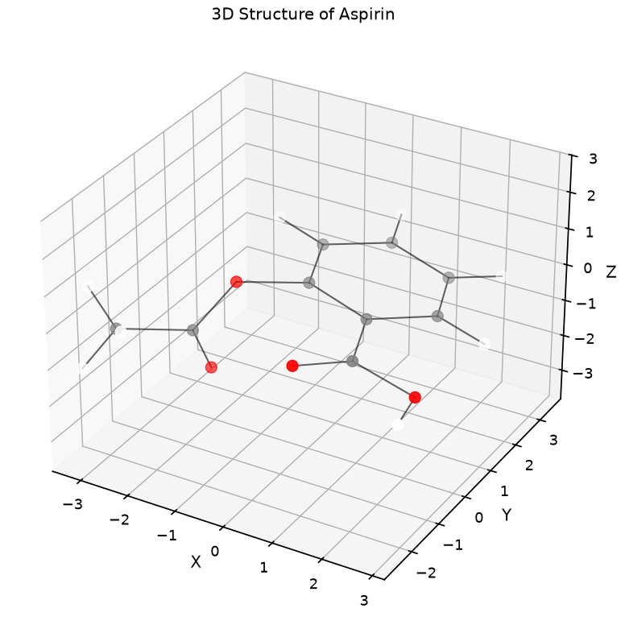
3D Distance Matrix for Aspirin:
| C0 | C1 | O2 | O3 | C4 | C5 | C6 | C7 | C8 | C9 | C10 | O11 | O12 | |
|---|---|---|---|---|---|---|---|---|---|---|---|---|---|
| C0 | 0.00 | 1.50 | 2.41 | 2.35 | 3.63 | 4.49 | 5.80 | 6.34 | 5.76 | 4.43 | 4.32 | 3.58 | 5.57 |
| C1 | 1.50 | 0.00 | 1.22 | 1.39 | 2.32 | 3.21 | 4.43 | 4.91 | 4.38 | 3.14 | 3.33 | 2.99 | 4.59 |
| O2 | 2.41 | 1.22 | 0.00 | 2.34 | 2.68 | 3.40 | 4.39 | 4.75 | 4.28 | 3.26 | 3.55 | 3.47 | 4.60 |
| O3 | 2.35 | 1.39 | 2.34 | 0.00 | 1.40 | 2.38 | 3.66 | 4.18 | 3.71 | 2.45 | 2.91 | 2.73 | 4.24 |
| C4 | 3.63 | 2.32 | 2.68 | 1.40 | 0.00 | 1.40 | 2.41 | 2.78 | 2.41 | 1.40 | 2.51 | 2.95 | 3.66 |
| C5 | 4.49 | 3.21 | 3.40 | 2.38 | 1.40 | 0.00 | 1.39 | 2.41 | 2.79 | 2.44 | 3.80 | 4.34 | 4.80 |
| C6 | 5.80 | 4.43 | 4.39 | 3.66 | 2.41 | 1.39 | 0.00 | 1.39 | 2.42 | 2.81 | 4.30 | 5.13 | 4.98 |
| C7 | 6.34 | 4.91 | 4.75 | 4.18 | 2.78 | 2.41 | 1.39 | 0.00 | 1.40 | 2.43 | 3.80 | 4.85 | 4.12 |
| C8 | 5.76 | 4.38 | 4.28 | 3.71 | 2.41 | 2.79 | 2.42 | 1.40 | 0.00 | 1.40 | 2.51 | 3.66 | 2.72 |
| C9 | 4.43 | 3.14 | 3.26 | 2.45 | 1.40 | 2.44 | 2.81 | 2.43 | 1.40 | 0.00 | 1.49 | 2.42 | 2.36 |
| C10 | 4.32 | 3.33 | 3.55 | 2.91 | 2.51 | 3.80 | 4.30 | 3.80 | 2.51 | 1.49 | 0.00 | 1.22 | 1.35 |
| O11 | 3.58 | 2.99 | 3.47 | 2.73 | 2.95 | 4.34 | 5.13 | 4.85 | 3.66 | 2.42 | 1.22 | 0.00 | 2.23 |
| O12 | 5.57 | 4.59 | 4.60 | 4.24 | 3.66 | 4.80 | 4.98 | 4.12 | 2.72 | 2.36 | 1.35 | 2.23 | 0.00 |
10. Similarity and Kernels for Molecules#
Kernels and similarity measures are essential for many machine learning methods, especially for Bayesian optimization. Here we’ll explore different similarity metrics for molecules.
# @title Molecular Similarity Calculation { display-mode: "form" }
def calculate_multiple_similarities(mol1, mol2):
"""Calculate different similarity metrics between two molecules."""
if mol1 is None or mol2 is None:
return None
# Generate different fingerprints
fp1_morgan = AllChem.GetMorganFingerprintAsBitVect(mol1, 2, nBits=2048)
fp2_morgan = AllChem.GetMorganFingerprintAsBitVect(mol2, 2, nBits=2048)
fp1_maccs = MACCSkeys.GenMACCSKeys(mol1)
fp2_maccs = MACCSkeys.GenMACCSKeys(mol2)
fp1_rdkit = FingerprintMols.FingerprintMol(mol1)
fp2_rdkit = FingerprintMols.FingerprintMol(mol2)
# Calculate similarities
tanimoto_morgan = DataStructs.TanimotoSimilarity(fp1_morgan, fp2_morgan)
tanimoto_maccs = DataStructs.TanimotoSimilarity(fp1_maccs, fp2_maccs)
tanimoto_rdkit = DataStructs.TanimotoSimilarity(fp1_rdkit, fp2_rdkit)
dice_morgan = DataStructs.DiceSimilarity(fp1_morgan, fp2_morgan)
cosine_morgan = DataStructs.CosineSimilarity(fp1_morgan, fp2_morgan)
# Molecular descriptor similarity
desc1 = calculate_descriptors(mol1)
desc2 = calculate_descriptors(mol2)
# Convert descriptors to vector (only numeric values)
desc_vector1 = np.array([v for k, v in desc1.items() if isinstance(v, (int, float)) and v is not None])
desc_vector2 = np.array([v for k, v in desc2.items() if isinstance(v, (int, float)) and v is not None])
# Ensure vectors are the same length (use min length)
min_len = min(len(desc_vector1), len(desc_vector2))
desc_vector1 = desc_vector1[:min_len]
desc_vector2 = desc_vector2[:min_len]
# Calculate Euclidean distance
euclidean_desc = np.linalg.norm(desc_vector1 - desc_vector2)
# Normalize to similarity score (1 for identical, 0 for very different)
# Using a simple exponential transformation
desc_similarity = np.exp(-euclidean_desc / 100)
return {
'Tanimoto (Morgan)': tanimoto_morgan,
'Tanimoto (MACCS)': tanimoto_maccs,
'Tanimoto (RDKit)': tanimoto_rdkit,
'Dice (Morgan)': dice_morgan,
'Cosine (Morgan)': cosine_morgan,
'Descriptor Similarity': desc_similarity
}
# Compare some molecules
def compare_molecules(name1, name2):
"""Compare two molecules using different similarity metrics."""
# Get the molecules
mol1_idx = molecules_df[molecules_df['Name'] == name1].index[0]
mol2_idx = molecules_df[molecules_df['Name'] == name2].index[0]
mol1 = molecules_df.loc[mol1_idx, 'Molecule']
mol2 = molecules_df.loc[mol2_idx, 'Molecule']
# Calculate similarities
similarities = calculate_multiple_similarities(mol1, mol2)
if similarities is None:
print(f"Could not calculate similarities between {name1} and {name2}.")
return
# Display the molecules
print(f"Comparing {name1} and {name2}:")
# Create a side-by-side visualization
img = Draw.MolsToGridImage([mol1, mol2], molsPerRow=2,
subImgSize=(300, 200),
legends=[name1, name2])
display(img)
# Display similarity scores
sim_df = pd.DataFrame({
'Similarity Metric': list(similarities.keys()),
'Score': list(similarities.values())
})
# Sort by score
sim_df = sim_df.sort_values('Score', ascending=False)
# Display as bar chart
plt.figure(figsize=(10, 6))
sns.barplot(x='Score', y='Similarity Metric', data=sim_df)
plt.title(f'Similarity Metrics: {name1} vs {name2}')
plt.xlim(0, 1)
plt.tight_layout()
plt.show()
# Compare some pair of molecules
compare_molecules('Aspirin', 'Ibuprofen')
compare_molecules('Aspirin', 'Paracetamol')
Comparing Aspirin and Ibuprofen:
[15:02:52] DEPRECATION WARNING: please use MorganGenerator
[15:02:52] DEPRECATION WARNING: please use MorganGenerator
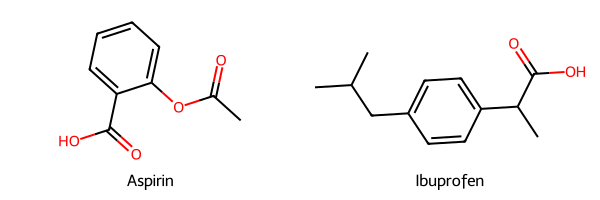
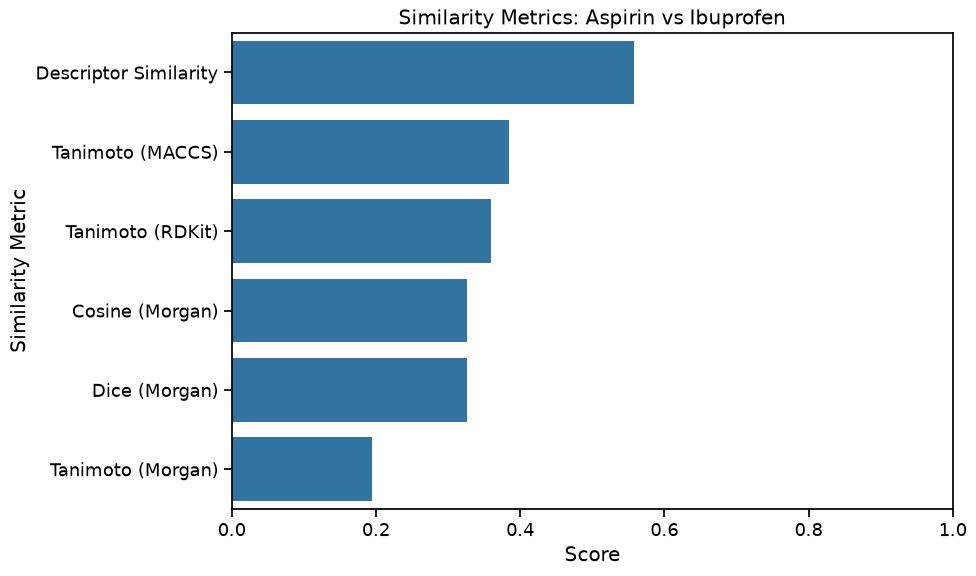
Comparing Aspirin and Paracetamol:
[15:02:52] DEPRECATION WARNING: please use MorganGenerator
[15:02:52] DEPRECATION WARNING: please use MorganGenerator
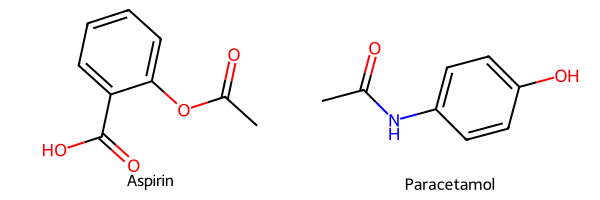
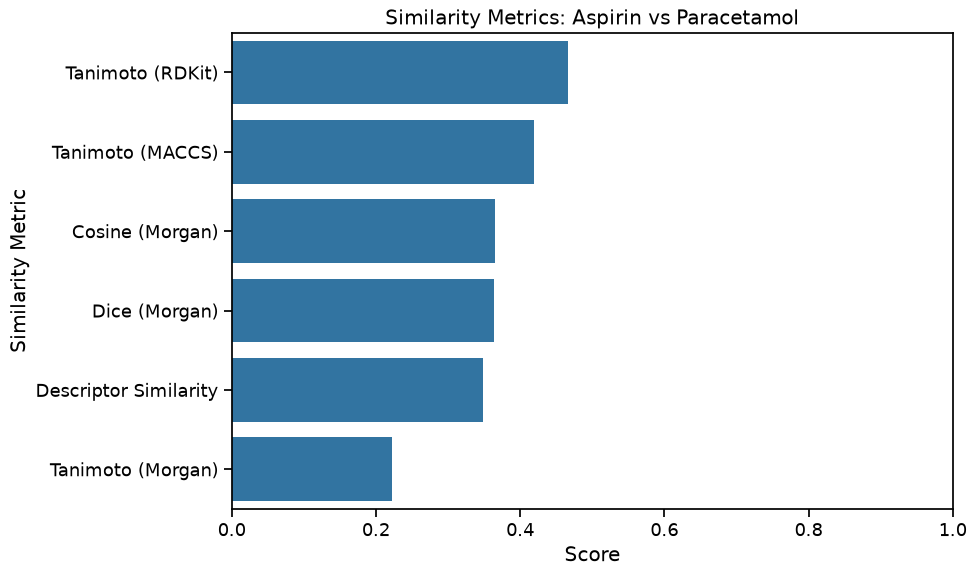
10.1 Kernel Functions for Molecular Machine Learning#
# @title Implement Molecular Kernels { display-mode: "form" }
def tanimoto_kernel(fp1, fp2):
"""
Tanimoto kernel function for bit vectors.
Parameters:
-----------
fp1, fp2 : numpy arrays
Fingerprint bit vectors
Returns:
--------
float
Tanimoto similarity
"""
intersection = np.sum(np.logical_and(fp1, fp2))
union = np.sum(np.logical_or(fp1, fp2))
if union == 0:
return 0.0
return intersection / union
def gaussian_kernel(x1, x2, sigma=1.0):
"""
Gaussian (RBF) kernel for molecular descriptors.
Parameters:
-----------
x1, x2 : numpy arrays
Feature vectors
sigma : float
Kernel width parameter
Returns:
--------
float
Gaussian kernel value
"""
return np.exp(-np.sum((x1 - x2)**2) / (2 * sigma**2))
def minmax_kernel(fp1, fp2):
"""
MinMax kernel for bit vectors (fingerprints).
Parameters:
-----------
fp1, fp2 : numpy arrays
Fingerprint bit vectors
Returns:
--------
float
MinMax kernel value
"""
intersection = np.sum(np.logical_and(fp1, fp2))
sum_min = np.sum(np.minimum(fp1, fp2))
sum_max = np.sum(np.maximum(fp1, fp2))
if sum_max == 0:
return 0.0
return intersection / sum_max
# Demonstrate kernels on molecular data
def visualize_kernel_matrix(kernel_func, data, labels):
"""
Visualize a kernel matrix for a set of molecules.
Parameters:
-----------
kernel_func : function
Kernel function to compute similarity
data : list of numpy arrays
List of fingerprints or feature vectors
labels : list of str
List of molecule names
Returns:
--------
numpy.ndarray
Kernel matrix
"""
n = len(data)
K = np.zeros((n, n))
for i in range(n):
for j in range(n):
K[i, j] = kernel_func(data[i], data[j])
# Visualize the kernel matrix
plt.figure(figsize=(10, 8))
sns.heatmap(K, annot=False, cmap='viridis', xticklabels=labels, yticklabels=labels)
plt.title('Kernel Matrix')
plt.tight_layout()
plt.show()
return K
# Get Morgan fingerprints for kernel demonstration
morgan_fps = [fp for fp in fingerprints['morgan']]
mol_names = molecules_df['Name'].tolist()
# Select a subset for better visualization
subset_size = 10
subset_indices = np.random.choice(len(morgan_fps), subset_size, replace=False)
subset_fps = [morgan_fps[i] for i in subset_indices]
subset_names = [mol_names[i] for i in subset_indices]
# Visualize Tanimoto kernel matrix
print("Tanimoto Kernel Matrix:")
tanimoto_matrix = visualize_kernel_matrix(tanimoto_kernel, subset_fps, subset_names)
Tanimoto Kernel Matrix:
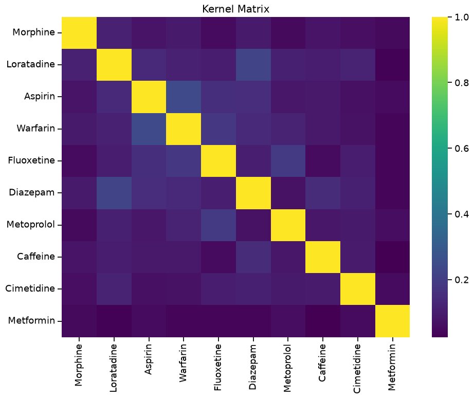
# Get descriptor vectors for Gaussian kernel
# Using a subset of descriptors for simplicity
desc_vectors = []
selected_descs = ['Molecular Weight', 'LogP', 'Topological Polar Surface Area',
'H-Bond Donors', 'H-Bond Acceptors', 'Rotatable Bonds']
for i in subset_indices:
desc = [descriptors_df.iloc[i][desc] for desc in selected_descs]
desc_vectors.append(np.array(desc))
# Normalize descriptors
desc_array = np.array(desc_vectors)
desc_mean = np.mean(desc_array, axis=0)
desc_std = np.std(desc_array, axis=0)
desc_norm = (desc_array - desc_mean) / desc_std
print("\nGaussian Kernel Matrix (on molecular descriptors):")
gaussian_matrix = visualize_kernel_matrix(
lambda x, y: gaussian_kernel(x, y, sigma=1.0),
desc_norm,
subset_names
)
Gaussian Kernel Matrix (on molecular descriptors):
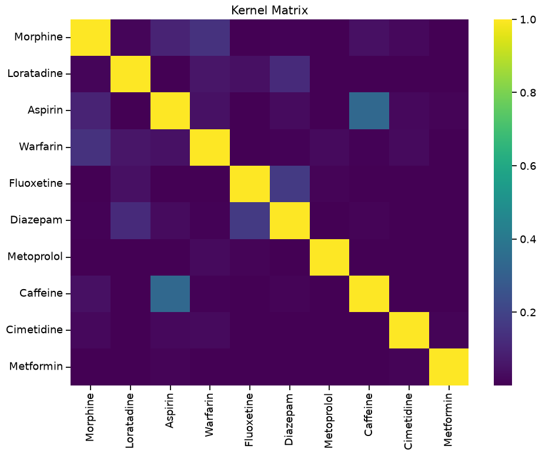
11. Choosing the Right Representation#
The choice of molecular representation depends on the specific task, available data, computational resources, and the machine learning method being used.
# @title Representation Selection Guide { display-mode: "form" }
# Create a decision tree-like guide for representation selection
def show_representation_guide():
"""Display a guide for selecting appropriate molecular representations."""
html = """
<div style="background-color:#f8f9fa; padding:20px; border-radius:10px; line-height:1.5;">
<h3 style="text-align:center;">Guide for Selecting Molecular Representations</h3>
<h4>Based on Machine Learning Task:</h4>
<ul>
<li><strong>Property prediction (regression/classification):</strong>
<ul>
<li>Fingerprints (Morgan/ECFP) for general purpose</li>
<li>Descriptors when interpretability is important</li>
<li>Graph representations for deep learning methods</li>
</ul>
</li>
<li><strong>Virtual screening/similarity search:</strong>
<ul>
<li>Fingerprints (Morgan/ECFP, MACCS) for speed and effectiveness</li>
<li>Pharmacophore features when binding information is available</li>
</ul>
</li>
<li><strong>De novo molecule design:</strong>
<ul>
<li>SMILES or graph representations for generative models</li>
<li>3D coordinates for structure-based design</li>
</ul>
</li>
<li><strong>Reaction prediction:</strong>
<ul>
<li>Fingerprints with reaction information</li>
<li>Graph representations for mechanistic understanding</li>
</ul>
</li>
<li><strong>Protein-ligand interactions:</strong>
<ul>
<li>3D representations or pharmacophore features</li>
<li>Fingerprints that capture interaction patterns</li>
</ul>
</li>
</ul>
<h4>Based on Dataset Size:</h4>
<ul>
<li><strong>Small datasets (<1000 compounds):</strong>
<ul>
<li>Descriptors with feature selection</li>
<li>Fingerprints with low dimensionality (MACCS)</li>
<li>Avoid complex 3D or graph representations</li>
</ul>
</li>
<li><strong>Medium datasets (1000-10,000 compounds):</strong>
<ul>
<li>Morgan/ECFP fingerprints</li>
<li>Combined fingerprint and descriptor approaches</li>
</ul>
</li>
<li><strong>Large datasets (>10,000 compounds):</strong>
<ul>
<li>Graph representations with neural networks</li>
<li>High-dimensional fingerprints</li>
<li>Learned representations</li>
</ul>
</li>
</ul>
<h4>Based on Chemical Space Coverage:</h4>
<ul>
<li><strong>Focused/related compound series:</strong>
<ul>
<li>Specialized fingerprints highlighting important substructures</li>
<li>Descriptors capturing key property differences</li>
</ul>
</li>
<li><strong>Diverse compound collections:</strong>
<ul>
<li>General-purpose fingerprints (Morgan/ECFP)</li>
<li>Graph representations</li>
</ul>
</li>
</ul>
<h4>Based on Computational Resources:</h4>
<ul>
<li><strong>Limited resources:</strong>
<ul>
<li>MACCS keys or other low-dimensional fingerprints</li>
<li>Selected descriptors</li>
</ul>
</li>
<li><strong>Standard resources:</strong>
<ul>
<li>Morgan/ECFP fingerprints</li>
<li>Combination of fingerprints and descriptors</li>
</ul>
</li>
<li><strong>High-performance computing:</strong>
<ul>
<li>Graph neural networks</li>
<li>3D representations</li>
<li>Multiple representation ensemble approaches</li>
</ul>
</li>
</ul>
</div>
"""
display(HTML(html))
# Show the guide
show_representation_guide()
Guide for Selecting Molecular Representations
Based on Machine Learning Task:
- Property prediction (regression/classification):
- Fingerprints (Morgan/ECFP) for general purpose
- Descriptors when interpretability is important
- Graph representations for deep learning methods
- Virtual screening/similarity search:
- Fingerprints (Morgan/ECFP, MACCS) for speed and effectiveness
- Pharmacophore features when binding information is available
- De novo molecule design:
- SMILES or graph representations for generative models
- 3D coordinates for structure-based design
- Reaction prediction:
- Fingerprints with reaction information
- Graph representations for mechanistic understanding
- Protein-ligand interactions:
- 3D representations or pharmacophore features
- Fingerprints that capture interaction patterns
Based on Dataset Size:
- Small datasets (<1000 compounds):
- Descriptors with feature selection
- Fingerprints with low dimensionality (MACCS)
- Avoid complex 3D or graph representations
- Medium datasets (1000-10,000 compounds):
- Morgan/ECFP fingerprints
- Combined fingerprint and descriptor approaches
- Large datasets (>10,000 compounds):
- Graph representations with neural networks
- High-dimensional fingerprints
- Learned representations
Based on Chemical Space Coverage:
- Focused/related compound series:
- Specialized fingerprints highlighting important substructures
- Descriptors capturing key property differences
- Diverse compound collections:
- General-purpose fingerprints (Morgan/ECFP)
- Graph representations
Based on Computational Resources:
- Limited resources:
- MACCS keys or other low-dimensional fingerprints
- Selected descriptors
- Standard resources:
- Morgan/ECFP fingerprints
- Combination of fingerprints and descriptors
- High-performance computing:
- Graph neural networks
- 3D representations
- Multiple representation ensemble approaches
12. Practical Considerations#
def show_practical_tips():
"""Display practical considerations when working with molecular representations."""
html = """
<div style="background-color:#f0f7ff; padding:20px; border-radius:10px; line-height:1.5;">
<h3 style="text-align:center;">Practical Tips for Working with Molecular Representations</h3>
<h4>Preprocessing and Standardization:</h4>
<ul>
<li>Standardize molecules before generating representations (neutralize charges, normalize tautomers)</li>
<li>Handle stereochemistry consistently (either preserve or remove)</li>
<li>Consider salt removal and dealing with multi-component structures</li>
<li>Generate 3D conformers with consistent methods</li>
</ul>
<h4>Dimensionality Issues:</h4>
<ul>
<li>High-dimensional fingerprints may require dimensionality reduction (PCA, t-SNE)</li>
<li>Feature selection is critical for descriptor-based approaches</li>
<li>Consider the curse of dimensionality when dataset size is limited</li>
</ul>
<h4>Handling Missing Values:</h4>
<ul>
<li>Some descriptors may fail for certain molecules</li>
<li>Develop robust strategies for dealing with missing values (imputation, default values)</li>
<li>Consider using representation methods that don't produce missing values</li>
</ul>
<h4>Computational Efficiency:</h4>
<ul>
<li>Cache fingerprints and descriptors when possible (especially for 3D calculations)</li>
<li>Use sparse representations for bit vectors</li>
<li>Consider the trade-off between representation quality and calculation speed</li>
</ul>
<h4>Combining Representations:</h4>
<ul>
<li>Ensemble approaches with multiple representation types often perform better</li>
<li>Properly scale and weight different representations when combining</li>
<li>Consider methods like Multiple Kernel Learning for combining kernels from different representations</li>
</ul>
<h4>Domain Knowledge Integration:</h4>
<ul>
<li>Use domain knowledge to select appropriate descriptors or fingerprint features</li>
<li>Consider adding custom descriptors for specific chemical classes</li>
<li>For Bayesian optimization, choose representations that align with the structure-activity relationship</li>
</ul>
</div>
"""
display(HTML(html))
# Show practical tips
show_practical_tips()
Practical Tips for Working with Molecular Representations
Preprocessing and Standardization:
- Standardize molecules before generating representations (neutralize charges, normalize tautomers)
- Handle stereochemistry consistently (either preserve or remove)
- Consider salt removal and dealing with multi-component structures
- Generate 3D conformers with consistent methods
Dimensionality Issues:
- High-dimensional fingerprints may require dimensionality reduction (PCA, t-SNE)
- Feature selection is critical for descriptor-based approaches
- Consider the curse of dimensionality when dataset size is limited
Handling Missing Values:
- Some descriptors may fail for certain molecules
- Develop robust strategies for dealing with missing values (imputation, default values)
- Consider using representation methods that don't produce missing values
Computational Efficiency:
- Cache fingerprints and descriptors when possible (especially for 3D calculations)
- Use sparse representations for bit vectors
- Consider the trade-off between representation quality and calculation speed
Combining Representations:
- Ensemble approaches with multiple representation types often perform better
- Properly scale and weight different representations when combining
- Consider methods like Multiple Kernel Learning for combining kernels from different representations
Domain Knowledge Integration:
- Use domain knowledge to select appropriate descriptors or fingerprint features
- Consider adding custom descriptors for specific chemical classes
- For Bayesian optimization, choose representations that align with the structure-activity relationship
13. Implementation Example: Molecular Similarity Search#
Let’s implement a complete example of using molecular representations for a similarity search.
# @title Similarity Search Implementation { display-mode: "form" }
def similarity_search(query_mol, database, fp_type='morgan', similarity_threshold=0.7, n_results=5):
"""
Perform a similarity search to find molecules similar to a query molecule.
Parameters:
-----------
query_mol : RDKit Mol
Query molecule
database : pd.DataFrame
DataFrame containing molecules to search
fp_type : str
Fingerprint type ('morgan', 'maccs', 'rdkit', 'atom_pair', 'torsion')
similarity_threshold : float
Minimum similarity score to include in results
n_results : int
Maximum number of results to return
Returns:
--------
pd.DataFrame
DataFrame with search results sorted by similarity
"""
if query_mol is None:
return pd.DataFrame()
# Generate fingerprint for query molecule
query_fp = generate_fingerprints(query_mol, fp_type)
# Calculate similarity to all molecules in the database
similarities = []
for i, row in database.iterrows():
mol = row['Molecule']
if mol is None:
continue
# Generate fingerprint
fp = generate_fingerprints(mol, fp_type)
# Calculate Tanimoto similarity
sim = tanimoto_kernel(query_fp, fp)
# Store result
similarities.append({
'Index': i,
'Name': row['Name'],
'SMILES': row['SMILES'],
'Similarity': sim,
'Molecule': mol
})
# Create DataFrame from results
results_df = pd.DataFrame(similarities)
# Filter by similarity threshold
results_df = results_df[results_df['Similarity'] >= similarity_threshold]
# Sort by similarity (descending)
results_df = results_df.sort_values('Similarity', ascending=False)
# Limit to top n results
results_df = results_df.head(n_results)
return results_df
# Run similarity search demo
def run_similarity_search_demo():
"""Run a demonstration of similarity search."""
# Select a query molecule
query_name = 'Aspirin'
query_mol = molecules_df[molecules_df['Name'] == query_name]['Molecule'].values[0]
# Display the query molecule
print(f"Query Molecule: {query_name}")
display(Draw.MolToImage(query_mol, size=(300, 200)))
# Run similarity search with different fingerprints
fingerprint_types = ['morgan', 'maccs', 'rdkit']
for fp_type in fingerprint_types:
print(f"\nResults using {fp_type.upper()} fingerprints:")
# Run search
results = similarity_search(
query_mol,
molecules_df,
fp_type=fp_type,
similarity_threshold=0.3,
n_results=5
)
if len(results) == 0:
print("No similar molecules found.")
continue
# Display results table
display(results[['Name', 'Similarity']].reset_index(drop=True))
# Display molecules
mols = results['Molecule'].tolist()
legends = [f"{name} ({sim:.2f})" for name, sim in zip(results['Name'], results['Similarity'])]
img = Draw.MolsToGridImage(mols, molsPerRow=3,
subImgSize=(250, 200),
legends=legends)
display(img)
# Run the demo
run_similarity_search_demo()
Query Molecule: Aspirin
Results using MORGAN fingerprints:
[15:02:53] DEPRECATION WARNING: please use MorganGenerator
[15:02:53] DEPRECATION WARNING: please use MorganGenerator
[15:02:53] DEPRECATION WARNING: please use MorganGenerator
[15:02:53] DEPRECATION WARNING: please use MorganGenerator
[15:02:53] DEPRECATION WARNING: please use MorganGenerator
[15:02:53] DEPRECATION WARNING: please use MorganGenerator
[15:02:53] DEPRECATION WARNING: please use MorganGenerator
[15:02:53] DEPRECATION WARNING: please use MorganGenerator
[15:02:53] DEPRECATION WARNING: please use MorganGenerator
[15:02:53] DEPRECATION WARNING: please use MorganGenerator
[15:02:53] DEPRECATION WARNING: please use MorganGenerator
[15:02:53] DEPRECATION WARNING: please use MorganGenerator
[15:02:53] DEPRECATION WARNING: please use MorganGenerator
[15:02:53] DEPRECATION WARNING: please use MorganGenerator
[15:02:53] DEPRECATION WARNING: please use MorganGenerator
[15:02:53] DEPRECATION WARNING: please use MorganGenerator
[15:02:53] DEPRECATION WARNING: please use MorganGenerator
[15:02:53] DEPRECATION WARNING: please use MorganGenerator
[15:02:53] DEPRECATION WARNING: please use MorganGenerator
[15:02:53] DEPRECATION WARNING: please use MorganGenerator
[15:02:53] DEPRECATION WARNING: please use MorganGenerator
| Name | Similarity | |
|---|---|---|
| 0 | Aspirin | 1.0 |
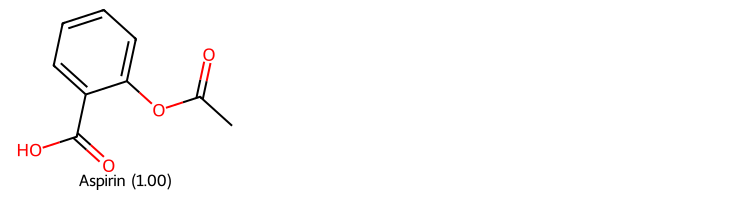
Results using MACCS fingerprints:
| Name | Similarity | |
|---|---|---|
| 0 | Aspirin | 1.000000 |
| 1 | Warfarin | 0.625000 |
| 2 | Paracetamol | 0.419355 |
| 3 | Ibuprofen | 0.384615 |
| 4 | Atorvastatin | 0.377778 |
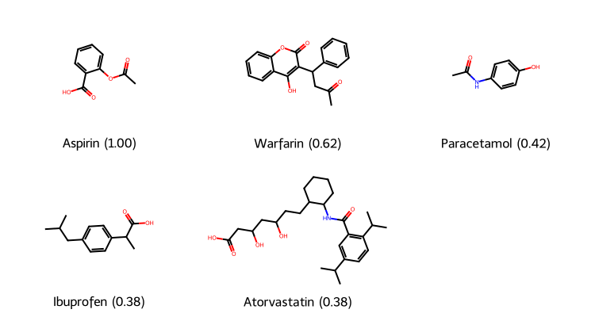
Results using RDKIT fingerprints:
| Name | Similarity | |
|---|---|---|
| 0 | Aspirin | 1.0 |
14. Exercises for Readers#
Here are some exercises to deepen your understanding of molecular representations:
# @title Suggested Exercises { display-mode: "form" }
def show_exercises():
"""Display exercises for readers to practice with molecular representations."""
html = """
<div style="background-color:#f5f5f5; padding:20px; border-radius:10px; line-height:1.5;">
<h3 style="text-align:center;">Exercises</h3>
<h4>Basic Exercises:</h4>
<ol>
<li><strong>SMILES Manipulation:</strong> Write a function to generate and compare canonical and non-canonical SMILES for a set of molecules. Observe how atom ordering affects the string representation.</li>
<li><strong>Fingerprint Comparison:</strong> Generate Morgan fingerprints with different radii (1, 2, 3) and compare how the radius parameter affects the similarity between molecules.</li>
<li><strong>Descriptor Analysis:</strong> Identify which molecular descriptors are most correlated with logP. Create a simple linear regression model to predict logP using only 3-5 descriptors.</li>
</ol>
<h4>Intermediate Exercises:</h4>
<ol>
<li><strong>Custom Fingerprint Design:</strong> Create a custom fingerprint function that focuses on specific structural features relevant to a particular property (e.g., features important for solubility).</li>
<li><strong>Representation Comparison:</strong> Compare the performance of different representations (fingerprints, descriptors, graphs) for predicting a molecular property using a simple machine learning model.</li>
<li><strong>Similarity Metrics:</strong> Implement and compare different similarity metrics (Tanimoto, Dice, Cosine) for molecular similarity searching. Analyze when each metric performs better.</li>
</ol>
<h4>Advanced Exercises:</h4>
<ol>
<li><strong>Multiple Kernel Learning:</strong> Implement a multiple kernel learning approach that combines different molecular representations for improved prediction performance.</li>
<li><strong>Pharmacophore Representation:</strong> Create a pharmacophore-based representation that captures 3D features important for binding.</li>
<li><strong>Representation Learning:</strong> Use a neural network to learn a new molecular representation from Morgan fingerprints that is optimized for a specific prediction task.</li>
</ol>
</div>
"""
display(HTML(html))
# Show exercises
show_exercises()
Exercises
Basic Exercises:
- SMILES Manipulation: Write a function to generate and compare canonical and non-canonical SMILES for a set of molecules. Observe how atom ordering affects the string representation.
- Fingerprint Comparison: Generate Morgan fingerprints with different radii (1, 2, 3) and compare how the radius parameter affects the similarity between molecules.
- Descriptor Analysis: Identify which molecular descriptors are most correlated with logP. Create a simple linear regression model to predict logP using only 3-5 descriptors.
Intermediate Exercises:
- Custom Fingerprint Design: Create a custom fingerprint function that focuses on specific structural features relevant to a particular property (e.g., features important for solubility).
- Representation Comparison: Compare the performance of different representations (fingerprints, descriptors, graphs) for predicting a molecular property using a simple machine learning model.
- Similarity Metrics: Implement and compare different similarity metrics (Tanimoto, Dice, Cosine) for molecular similarity searching. Analyze when each metric performs better.
Advanced Exercises:
- Multiple Kernel Learning: Implement a multiple kernel learning approach that combines different molecular representations for improved prediction performance.
- Pharmacophore Representation: Create a pharmacophore-based representation that captures 3D features important for binding.
- Representation Learning: Use a neural network to learn a new molecular representation from Morgan fingerprints that is optimized for a specific prediction task.
15. Summary and Key Takeaways#
In this notebook, we’ve explored various approaches to representing molecules for machine learning, with a focus on applications in Bayesian optimization and active learning for drug discovery.
# @title Key Takeaways { display-mode: "form" }
def show_summary():
"""Display summary and key takeaways."""
html = """
<div style="background-color:#e6f7e6; padding:20px; border-radius:10px; line-height:1.5;">
<h3 style="text-align:center;">Key Takeaways</h3>
<ul>
<li><strong>No Universal Representation:</strong> The choice of molecular representation should be tailored to the specific task, dataset, and computational resources available.</li>
<li><strong>Fingerprints:</strong> Provide a good balance of performance and computational efficiency. Morgan/ECFP fingerprints are particularly versatile for many applications.</li>
<li><strong>Descriptors:</strong> Offer interpretability and direct physical meaning but may require careful feature selection and handling of correlations.</li>
<li><strong>Graph Representations:</strong> Preserve complete topological information and work well with deep learning approaches, though they require more computational resources.</li>
<li><strong>3D Representations:</strong> Essential for capturing spatial information relevant to protein-ligand interactions but come with increased computational cost and conformational variability.</li>
<li><strong>Similarity Metrics:</strong> Different fingerprints and similarity metrics capture different aspects of molecular similarity. Tanimoto similarity with Morgan fingerprints provides a good general-purpose approach.</li>
<li><strong>Kernel Functions:</strong> Properly defined kernel functions enable the use of powerful kernel methods like Gaussian Processes for Bayesian optimization of molecular properties.</li>
<li><strong>Representation Combinations:</strong> Hybrid approaches that combine multiple representations often lead to better performance across a range of tasks.</li>
</ul>
<h4>Applications to Bayesian Optimization and Active Learning:</h4>
<ul>
<li>Appropriate molecular representations are crucial for defining the chemical space to be explored.</li>
<li>The choice of representation directly affects the smoothness of the objective function landscape.</li>
<li>Kernels derived from molecular representations determine how information is shared between similar molecules.</li>
<li>Effective representation can significantly improve sample efficiency in active learning loops.</li>
</ul>
</div>
"""
display(HTML(html))
# Show summary
show_summary()
Key Takeaways
- No Universal Representation: The choice of molecular representation should be tailored to the specific task, dataset, and computational resources available.
- Fingerprints: Provide a good balance of performance and computational efficiency. Morgan/ECFP fingerprints are particularly versatile for many applications.
- Descriptors: Offer interpretability and direct physical meaning but may require careful feature selection and handling of correlations.
- Graph Representations: Preserve complete topological information and work well with deep learning approaches, though they require more computational resources.
- 3D Representations: Essential for capturing spatial information relevant to protein-ligand interactions but come with increased computational cost and conformational variability.
- Similarity Metrics: Different fingerprints and similarity metrics capture different aspects of molecular similarity. Tanimoto similarity with Morgan fingerprints provides a good general-purpose approach.
- Kernel Functions: Properly defined kernel functions enable the use of powerful kernel methods like Gaussian Processes for Bayesian optimization of molecular properties.
- Representation Combinations: Hybrid approaches that combine multiple representations often lead to better performance across a range of tasks.
Applications to Bayesian Optimization and Active Learning:
- Appropriate molecular representations are crucial for defining the chemical space to be explored.
- The choice of representation directly affects the smoothness of the objective function landscape.
- Kernels derived from molecular representations determine how information is shared between similar molecules.
- Effective representation can significantly improve sample efficiency in active learning loops.
16. References#
Here are some key references for further reading on molecular representations:
# @title References { display-mode: "form" }
def show_references():
"""Display references for further reading."""
html = """
<div style="background-color:#f0f0f5; padding:20px; border-radius:10px; line-height:1.5;">
<h3 style="text-align:center;">References</h3>
<ol>
<li>Cereto-Massagué, A., Ojeda, M. J., Valls, C., Mulero, M., Garcia-Vallvé, S., & Pujadas, G. (2015). Molecular fingerprint similarity search in virtual screening. <em>Methods</em>, 71, 58-63.</li>
<li>Rogers, D., & Hahn, M. (2010). Extended-connectivity fingerprints. <em>Journal of Chemical Information and Modeling</em>, 50(5), 742-754.</li>
<li>Todeschini, R., & Consonni, V. (2009). <em>Molecular descriptors for chemoinformatics</em>. John Wiley & Sons.</li>
<li>Duvenaud, D. K., Maclaurin, D., Iparraguirre, J., Bombarell, R., Hirzel, T., Aspuru-Guzik, A., & Adams, R. P. (2015). Convolutional networks on graphs for learning molecular fingerprints. <em>Advances in Neural Information Processing Systems</em>, 28.</li>
<li>Weininger, D. (1988). SMILES, a chemical language and information system. 1. Introduction to methodology and encoding rules. <em>Journal of Chemical Information and Computer Sciences</em>, 28(1), 31-36.</li>
<li>Bemis, G. W., & Murcko, M. A. (1996). The properties of known drugs. 1. Molecular frameworks. <em>Journal of Medicinal Chemistry</em>, 39(15), 2887-2893.</li>
<li>Mayr, A., Klambauer, G., Unterthiner, T., Steijaert, M., Wegner, J. K., Ceulemans, H., ... & Hochreiter, S. (2018). Large-scale comparison of machine learning methods for drug target prediction on ChEMBL. <em>Chemical Science</em>, 9(24), 5441-5451.</li>
<li>Ralaivola, L., Swamidass, S. J., Saigo, H., & Baldi, P. (2005). Graph kernels for chemical informatics. <em>Neural Networks</em>, 18(8), 1093-1110.</li>
<li>Krenn, M., Häse, F., Nigam, A., Friederich, P., & Aspuru-Guzik, A. (2020). Self-referencing embedded strings (SELFIES): A 100% robust molecular string representation. <em>Machine Learning: Science and Technology</em>, 1(4), 045024.</li>
<li>Wu, Z., Ramsundar, B., Feinberg, E. N., Gomes, J., Geniesse, C., Pappu, A. S., ... & Pande, V. (2018). MoleculeNet: a benchmark for molecular machine learning. <em>Chemical Science</em>, 9(2), 513-530.</li>
</ol>
<h4>Useful Software and Resources:</h4>
<ul>
<li>RDKit: Open-source cheminformatics software - <a href="https://www.rdkit.org/" target="_blank">https://www.rdkit.org/</a></li>
<li>DeepChem: Deep-learning library for chemistry - <a href="https://deepchem.io/" target="_blank">https://deepchem.io/</a></li>
<li>ChEMBL: Database of bioactive molecules - <a href="https://www.ebi.ac.uk/chembl/" target="_blank">https://www.ebi.ac.uk/chembl/</a></li>
<li>PubChem: Open chemistry database - <a href="https://pubchem.ncbi.nlm.nih.gov/" target="_blank">https://pubchem.ncbi.nlm.nih.gov/</a></li>
</ul>
</div>
"""
display(HTML(html))
# Show references
show_references()
References
- Cereto-Massagué, A., Ojeda, M. J., Valls, C., Mulero, M., Garcia-Vallvé, S., & Pujadas, G. (2015). Molecular fingerprint similarity search in virtual screening. Methods, 71, 58-63.
- Rogers, D., & Hahn, M. (2010). Extended-connectivity fingerprints. Journal of Chemical Information and Modeling, 50(5), 742-754.
- Todeschini, R., & Consonni, V. (2009). Molecular descriptors for chemoinformatics. John Wiley & Sons.
- Duvenaud, D. K., Maclaurin, D., Iparraguirre, J., Bombarell, R., Hirzel, T., Aspuru-Guzik, A., & Adams, R. P. (2015). Convolutional networks on graphs for learning molecular fingerprints. Advances in Neural Information Processing Systems, 28.
- Weininger, D. (1988). SMILES, a chemical language and information system. 1. Introduction to methodology and encoding rules. Journal of Chemical Information and Computer Sciences, 28(1), 31-36.
- Bemis, G. W., & Murcko, M. A. (1996). The properties of known drugs. 1. Molecular frameworks. Journal of Medicinal Chemistry, 39(15), 2887-2893.
- Mayr, A., Klambauer, G., Unterthiner, T., Steijaert, M., Wegner, J. K., Ceulemans, H., ... & Hochreiter, S. (2018). Large-scale comparison of machine learning methods for drug target prediction on ChEMBL. Chemical Science, 9(24), 5441-5451.
- Ralaivola, L., Swamidass, S. J., Saigo, H., & Baldi, P. (2005). Graph kernels for chemical informatics. Neural Networks, 18(8), 1093-1110.
- Krenn, M., Häse, F., Nigam, A., Friederich, P., & Aspuru-Guzik, A. (2020). Self-referencing embedded strings (SELFIES): A 100% robust molecular string representation. Machine Learning: Science and Technology, 1(4), 045024.
- Wu, Z., Ramsundar, B., Feinberg, E. N., Gomes, J., Geniesse, C., Pappu, A. S., ... & Pande, V. (2018). MoleculeNet: a benchmark for molecular machine learning. Chemical Science, 9(2), 513-530.
Useful Software and Resources:
- RDKit: Open-source cheminformatics software - https://www.rdkit.org/
- DeepChem: Deep-learning library for chemistry - https://deepchem.io/
- ChEMBL: Database of bioactive molecules - https://www.ebi.ac.uk/chembl/
- PubChem: Open chemistry database - https://pubchem.ncbi.nlm.nih.gov/
17. Next Steps#
In the next chapters of this series, we’ll explore how these molecular representations can be used in Gaussian Processes and Bayesian optimization for efficient molecular property optimization.
@title Next Chapters Preview { display-mode: “form” }
def show_next_steps():
"""Preview upcoming chapters."""
html = """
<div style="background-color:#f7f2e6; padding:20px; border-radius:10px; line-height:1.5;">
<h3 style="text-align:center;">Coming Up Next</h3>
<h4>Gaussian Processes for Molecular Property Prediction:</h4>
<ul>
<li>Using molecular representations with Gaussian Processes</li>
<li>Kernel design for molecular similarity</li>
<li>Uncertainty quantification in molecular property prediction</li>
</ul>
<h4>Acquisition Functions for Molecular Optimization:</h4>
<ul>
<li>Expected Improvement for finding molecules with optimal properties</li>
<li>Upper Confidence Bound for exploration-exploitation balance</li>
<li>Thompson Sampling for efficient chemical space exploration</li>
</ul>
<h4>Active Learning Strategies for Drug Discovery:</h4>
<ul>
<li>Uncertainty-based sampling in chemical space</li>
<li>Diversity sampling for broader exploration</li>
<li>Expected model change for efficient learning</li>
</ul>
</div>
"""
display(HTML(html))
# Show preview of next chapters
show_next_steps()
Coming Up Next
Gaussian Processes for Molecular Property Prediction:
- Using molecular representations with Gaussian Processes
- Kernel design for molecular similarity
- Uncertainty quantification in molecular property prediction
Acquisition Functions for Molecular Optimization:
- Expected Improvement for finding molecules with optimal properties
- Upper Confidence Bound for exploration-exploitation balance
- Thompson Sampling for efficient chemical space exploration
Active Learning Strategies for Drug Discovery:
- Uncertainty-based sampling in chemical space
- Diversity sampling for broader exploration
- Expected model change for efficient learning